CHAPTER 03 / 中英对照
内存一致性的动机与顺序一致性
Memory Consistency Motivation and Sequential Consistency
本章目录
3.1 共享内存行为中的问题3.2 什么是内存一致性模型？3.3 内存一致性与缓存一致性3.4 顺序一致性（SC）的基本思想3.5 SC的简要形式化描述3.6 朴素的SC实现3.7 借助缓存一致性的基本SC实现3.8 借助缓存一致性的优化SC实现3.9 SC下的原子操作3.10 综合案例：MIPS R100003.11 关于SC的延伸阅读3.12 参考文献原书第 17 页PDF 39
ENGLISHThis chapter delves into memory consistency models (a.k.a. memory models) that define the behavior of shared memory systems for programmers and implementors. These models define correctness so that programmers know what to expect and implementors know what to provide. We first motivate the need to define memory behavior (Section 3.1), say what a memory consistency model should do (Section 3.2), and compare and contrast consistency and coherence (Section 3.3).
中文本章深入讨论内存一致性模型（也称内存模型），它们面向程序员和实现者，定义共享内存系统的行为。这些模型规定正确性，使程序员知道可以期待什么，使实现者知道必须提供什么。我们首先说明为何需要定义内存行为（3.1节），阐明内存一致性模型应当发挥的作用（3.2节），再比较内存一致性与缓存一致性（3.3节）。
ENGLISHWe then explore the (relatively) intuitive model of sequential consistency (SC). SC is important because it is what many programmers expect of shared memory and provides a foundation for understanding the more relaxed (weak) memory consistency models presented in the next two chapters. We first present the basic idea of SC (Section 3.4) and present a formalism of it that we will also use in subsequent chapters (Section 3.5). We then discuss implementations of SC, starting with naive implementations that serve as operational models (Section 3.6), a basic implementation of SC with cache coherence (Section 3.7), more optimized implementations of SC with cache coherence (Section 3.8), and the implementation of atomic operations (Section 3.9). We conclude our discussion of SC by providing a MIPS R10000 case study (Section 3.10) and pointing to some further reading (Section 3.11).
中文随后，我们探讨相对直观的顺序一致性（SC）模型。SC之所以重要，是因为它符合许多程序员对共享内存的预期，并为理解后两章的宽松（弱）内存一致性模型奠定基础。我们先介绍SC的基本思想（3.4节），再给出后续章节也将使用的形式化描述（3.5节）。接着讨论SC的实现：首先是可用作操作性模型的朴素实现（3.6节），然后是借助缓存一致性的基本实现（3.7节）、进一步优化的实现（3.8节），以及原子操作的实现（3.9节）。最后，通过MIPS R10000案例（3.10节）和延伸阅读建议（3.11节）结束对SC的讨论。
ENGLISH3.1 PROBLEMS WITH SHARED MEMORY BEHAVIOR
中文3.1 共享内存行为中的问题
ENGLISHTo see why shared memory behavior must be defined, consider the example execution of two cores1 depicted in Table 3.1. (This example, as is the case for all examples in this chapter, assumes that the initial values of all variables are zero.) Most programmers would expect that core C2’s register r2 should get the value NEW. Nevertheless, r2 can be 0 in some of today’s computer systems.
中文为说明为何必须定义共享内存行为，考虑表3.1中两个处理器核¹的执行示例。与本章全部示例一样，该示例假定所有变量的初始值为零。大多数程序员会预期核C2的寄存器r2得到NEW。然而，在如今的某些计算机系统中，r2可能为0。
ENGLISHHardware can make r2 get the value 0 by reordering core C1’s stores S1 and S2. Locally (i.e., if we look only at C1’s execution and do not consider interactions with other threads), this reordering seems correct because S1 and S2 access different addresses. The sidebar on page 18
中文硬件可以通过重排核C1的 store S1和S2，使r2得到0。从局部来看，也就是只考察C1执行而不考虑与其他线程的交互，这种重排似乎正确，因为S1和S2访问不同地址。第18页的旁注
ENGLISH1Let “core” refer to software’s view of a core, which may be an actual core or a thread context of a multithreaded core.
中文¹ 此处的“核”指软件所看到的处理器核，它可能是实际的核，也可能是多线程处理器核中的一个线程上下文。
查看 原书第 17 页 的完整原版面（PDF 39）
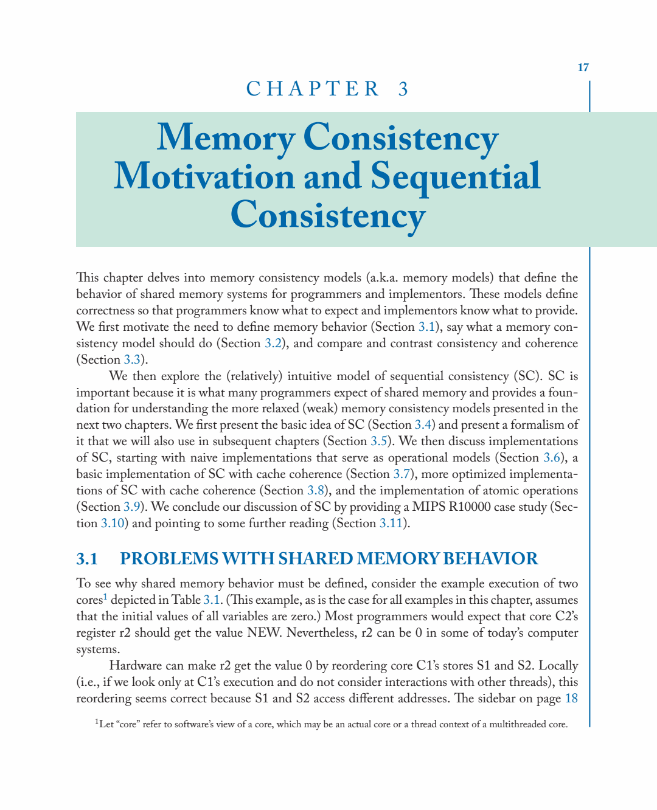
原书第 18 页PDF 40
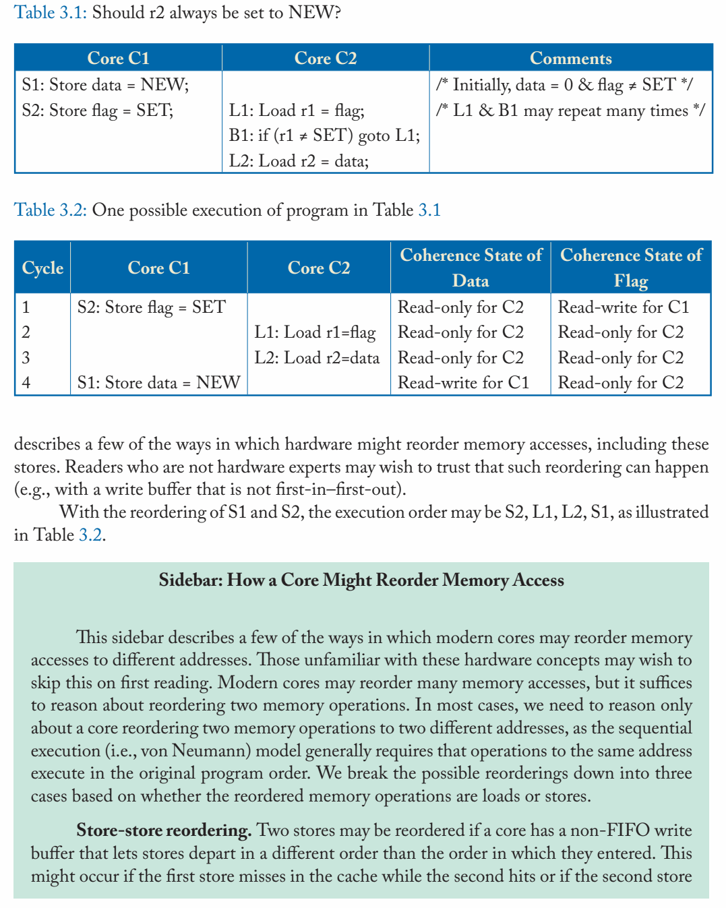
展开可搜索的英文文字
Core C1 Core C2 Comments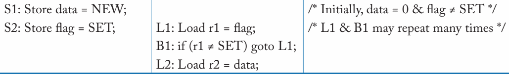
展开可搜索的英文文字
S1: Store data = NEW; /* Initially, data = 0 & fl ag ≠ SET */ S2: Store fl ag = SET; L1: Load r1 = fl ag; /* L1 & B1 may repeat many times */ B1: if (r1 ≠ SET) goto L1; L2: Load r2 = data;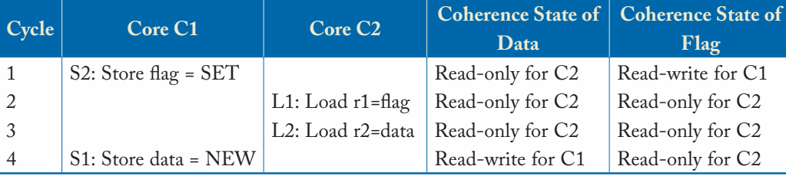
展开可搜索的英文文字
Coherence State of Coherence State of Cycle Core C1 Core C2 Data Flag 1 S2: Store fl ag = SET Read-only for C2 Read-write for C1 2 L1: Load r1=fl ag Read-only for C2 Read-only for C2 3 L2: Load r2=data Read-only for C2 Read-only for C2 4 S1: Store data = NEW Read-write for C1 Read-only for C2ENGLISHdescribes a few of the ways in which hardware might reorder memory accesses, including these stores. Readers who are not hardware experts may wish to trust that such reordering can happen (e.g., with a write buffer that is not first-in–first-out). With the reordering of S1 and S2, the execution order may be S2, L1, L2, S1, as illustrated in Table 3.2.
中文介绍硬件重排内存访问的若干方式，包括这些 store 操作。对硬件不熟悉的读者，可以先接受这种重排确实可能发生，例如使用非先进先出的写缓冲区。S1与S2重排后，执行顺序可能为S2、L1、L2、S1，如表3.2所示。
ENGLISHSidebar: How a Core Might Reorder Memory Access
中文旁注：处理器核如何重排内存访问
ENGLISHThis sidebar describes a few of the ways in which modern cores may reorder memory accesses to different addresses. Those unfamiliar with these hardware concepts may wish to skip this on first reading. Modern cores may reorder many memory accesses, but it suffices to reason about reordering two memory operations. In most cases, we need to reason only about a core reordering two memory operations to two different addresses, as the sequential execution (i.e., von Neumann) model generally requires that operations to the same address execute in the original program order. We break the possible reorderings down into three cases based on whether the reordered memory operations are loads or stores.
中文本旁注介绍现代处理器核重排不同地址内存访问的若干方式。不熟悉这些硬件概念的读者，初读时可以略过。现代处理器核可能重排许多内存访问，但只分析两个内存操作之间的重排就足够了。在大多数情况下，只需考察针对不同地址的两个操作，因为顺序执行（即冯·诺依曼）模型通常要求针对同一地址的操作按原程序顺序执行。根据被重排的内存操作是 load 还是 store，我们将可能的重排分为三类。
ENGLISHStore-store reordering. Two stores may be reordered if a core has a non-FIFO write buffer that lets stores depart in a different order than the order in which they entered. This might occur if the first store misses in the cache while the second hits or if the second store
中文store—store 重排。如果处理器核具有非FIFO写缓冲区，允许 store 以不同于进入缓冲区的顺序离开，那么两个 store 就可能重排。例如，第一个 store 缓存缺失而第二个命中，或者第二个 store
查看 原书第 18 页 的完整原版面（PDF 40）
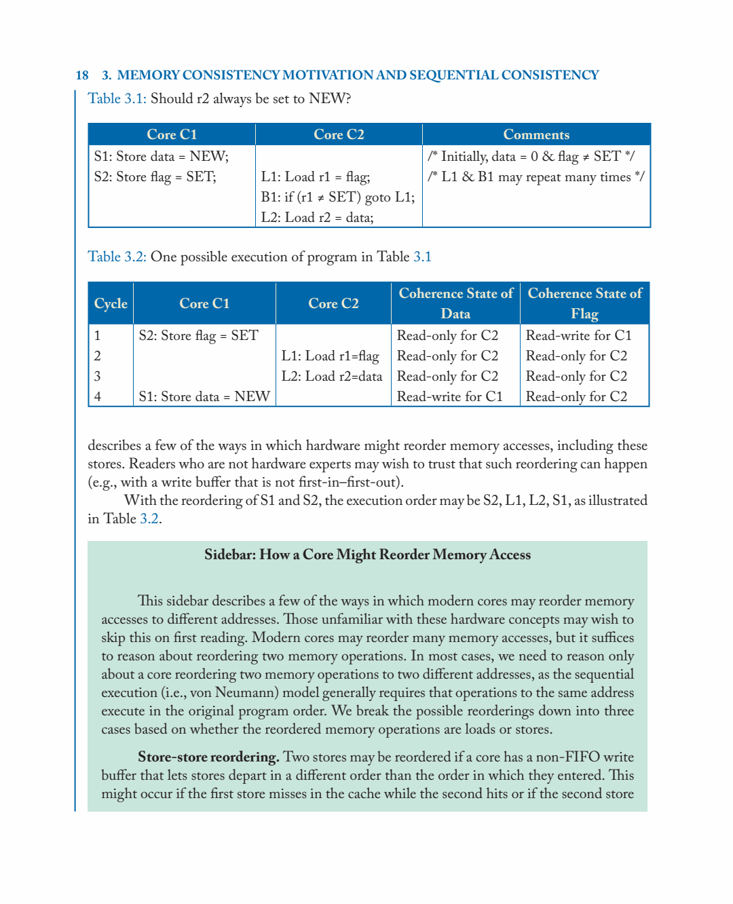
原书第 19 页PDF 41
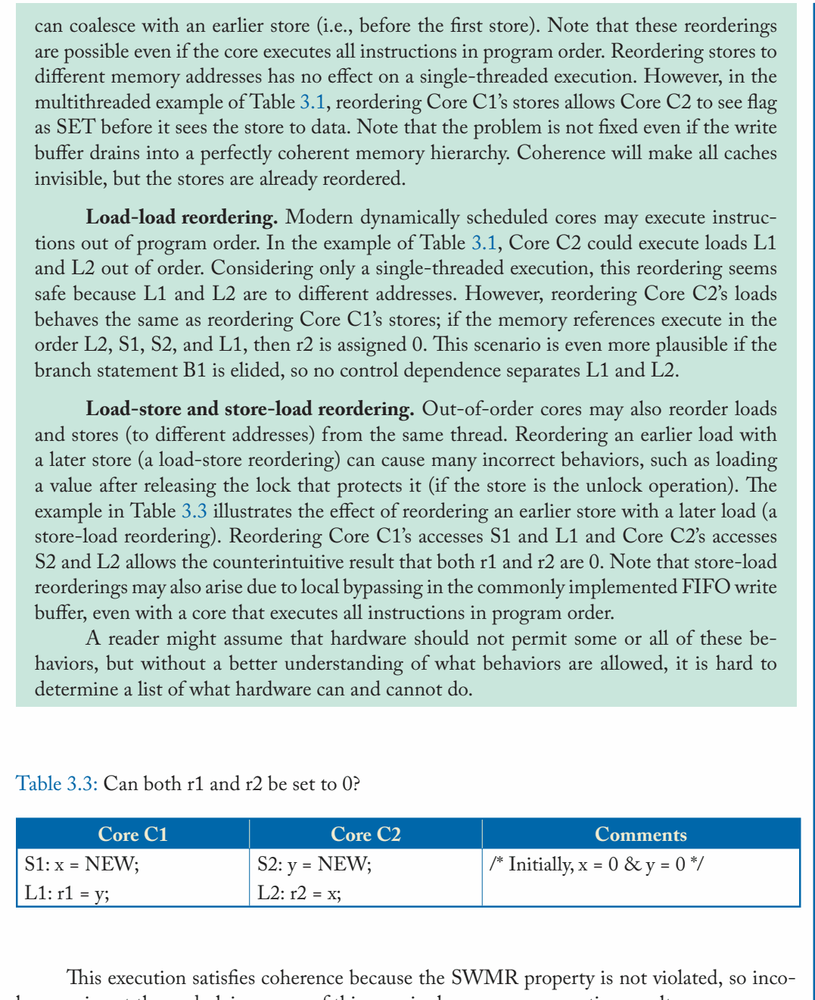
ENGLISHcan coalesce with an earlier store (i.e., before the first store). Note that these reorderings are possible even if the core executes all instructions in program order. Reordering stores to different memory addresses has no effect on a single-threaded execution. However, in the multithreaded example of Table 3.1, reordering Core C1’s stores allows Core C2 to see flag as SET before it sees the store to data. Note that the problem is not fixed even if the write buffer drains into a perfectly coherent memory hierarchy. Coherence will make all caches invisible, but the stores are already reordered.
中文能与更早的 store （即位于第一个 store 之前的操作）合并时，就可能发生这种情况。注意，即使处理器核按程序顺序执行全部指令，也可能出现这些重排。针对不同内存地址的 store 重排，不影响单线程执行。然而，在表3.1的多线程示例中，重排C1的 store，会使C2先看到flag为SET，后看到对data的 store。即便写缓冲区最终排空至完全满足缓存一致性的内存层次结构，也不能解决这一问题：缓存一致性会使缓存对软件不可见，但 store 已经被重排。
ENGLISHLoad-load reordering. Modern dynamically scheduled cores may execute instructions out of program order. In the example of Table 3.1, Core C2 could execute loads L1 and L2 out of order. Considering only a single-threaded execution, this reordering seems safe because L1 and L2 are to different addresses. However, reordering Core C2’s loads behaves the same as reordering Core C1’s stores; if the memory references execute in the order L2, S1, S2, and L1, then r2 is assigned 0. This scenario is even more plausible if the branch statement B1 is elided, so no control dependence separates L1 and L2.
中文load—load 重排。现代动态调度处理器核可以不按程序顺序执行指令。在表3.1中，C2可以乱序执行L1和L2。若只考虑单线程执行，这似乎安全，因为二者访问不同地址。然而，重排C2的 load 与重排C1的 store 具有相同效果：若内存访问顺序为L2、S1、S2、L1，r2便被赋值为0。若省略分支语句B1，使L1与L2之间没有控制依赖，这种情形就更容易出现。
ENGLISHLoad-store and store-load reordering. Out-of-order cores may also reorder loads and stores (to different addresses) from the same thread. Reordering an earlier load with a later store (a load-store reordering) can cause many incorrect behaviors, such as loading a value after releasing the lock that protects it (if the store is the unlock operation). The example in Table 3.3 illustrates the effect of reordering an earlier store with a later load (a store-load reordering). Reordering Core C1’s accesses S1 and L1 and Core C2’s accesses S2 and L2 allows the counterintuitive result that both r1 and r2 are 0. Note that store-load reorderings may also arise due to local bypassing in the commonly implemented FIFO write buffer, even with a core that executes all instructions in program order.
中文load—store 与 store—load 重排。乱序处理器核也可能重排同一线程中访问不同地址的 load 与 store。将较早的 load 与较后的 store 重排，即 load—store 重排，可能导致许多错误行为，例如在释放保护某数据的锁之后才 load 该数据，其中 store 就是解锁操作。表3.3说明较早 store 与较后 load 重排，即 store—load 重排的影响。重排C1的S1与L1，以及C2的S2与L2，便允许出现r1与r2均为0这一反直觉结果。注意，即便核按程序顺序执行全部指令，常见FIFO写缓冲区中的本地旁路机制，也可能引起 store—load 重排。
ENGLISHA reader might assume that hardware should not permit some or all of these behaviors, but without a better understanding of what behaviors are allowed, it is hard to determine a list of what hardware can and cannot do.
中文读者可能认为，硬件不应允许上述部分或全部行为。然而，如果未更清楚地理解允许哪些行为，就很难列出硬件可以做什么、不能做什么。
展开可搜索的英文文字
Core C1 Core C2 Comments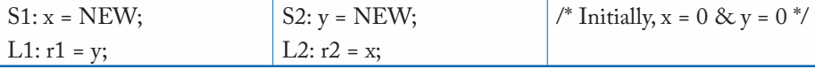
展开可搜索的英文文字
S1: x = NEW; S2: y = NEW; /* Initially, x = 0 & y = 0 */ L1: r1 = y; L2: r2 = x;ENGLISHThis execution satisfies coherence because the SWMR property is not violated, so incoherence is not the underlying cause of this seemingly erroneous execution result.
中文这一执行满足缓存一致性，因为SWMR性质未被违反；因此，缓存不一致并不是这个看似错误结果的根本原因。
查看 原书第 19 页 的完整原版面（PDF 41）
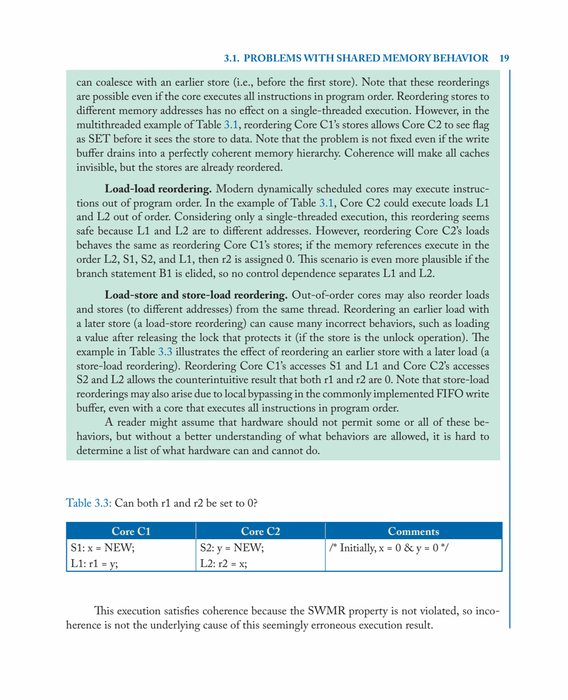
原书第 20 页PDF 42
ENGLISHLet us consider another important example inspired by Dekker’s Algorithm for ensuring mutual exclusion, as depicted in Table 3.3. After execution, what values are allowed in r1 and r2? Intuitively, one might expect that there are three possibilities:
中文再考虑表3.3中的一个重要例子，它来自用于保证互斥的Dekker算法。执行结束后，r1和r2允许取哪些值？直观上，人们可能认为有三种可能：
ENGLISH• (r1, r2) = (0, NEW) for execution S1, L1, S2, then L2
中文• 执行顺序为S1、L1、S2、L2时，(r1, r2) = (0, NEW)。
ENGLISH• (r1, r2) = (NEW, 0) for S2, L2, S1, and L1
中文• 执行顺序为S2、L2、S1、L1时，(r1, r2) = (NEW, 0)。
ENGLISH• (r1, r2) = (NEW, NEW), e.g., for S1, S2, L1, and L2
中文• 例如执行顺序为S1、S2、L1、L2时，(r1, r2) = (NEW, NEW)。
ENGLISHSurprisingly, most real hardware, e.g., x86 systems from Intel and AMD, also allows (r1, r2) = (0, 0) because it uses first-in–first-out (FIFO) write buffers to enhance performance. As with the example in Table 3.1, all of these executions satisfy cache coherence, even (r1, r2) = (0, 0).
中文令人意外的是，大多数实际硬件，例如Intel和AMD的x86系统，还允许(r1, r2) = (0, 0)，因为它们使用先进先出（FIFO）写缓冲区来提升性能。与表3.1一样，这些执行全部满足缓存一致性，包括(r1, r2) = (0, 0)。
ENGLISHSome readers might object to this example because it is non-deterministic (multiple outcomes are allowed) and may be a confusing programming idiom. However, in the first place, all current multiprocessors are non-deterministic by default; all architectures of which we are aware permit multiple possible interleavings of the executions of concurrent threads. The illusion of determinism is sometimes, but not always, created by software with appropriate synchronization idioms. Thus, we must consider non-determinism when defining shared memory behavior.
中文部分读者可能不认同这个例子，因为它具有非确定性，允许多个结果，而且这种编程方式可能令人困惑。然而，首先，目前所有多处理器默认都具有非确定性；据我们所知，所有体系结构都允许并发线程的执行形成多种交错。软件有时能够通过适当的同步方式营造确定性的效果，但并不总能做到。因此，定义共享内存行为时，必须考虑非确定性。
ENGLISHFurthermore, memory behavior is usually defined for all executions of all programs, even those that are incorrect or intentionally subtle (e.g., for non-blocking synchronization algorithms). In Chapter 5, however, we will see some high-level language models that allow some executions to have undefined behavior, e.g., executions of programs with data races.
中文此外，内存行为通常针对所有程序的所有执行进行定义，即便程序有错误，或有意采用微妙的设计，例如非阻塞同步算法。不过，第5章将介绍某些高级语言模型，它们允许部分执行具有未定义行为，例如存在数据竞争的程序执行。
ENGLISH3.2 WHAT IS A MEMORY CONSISTENCY MODEL?
中文3.2 什么是内存一致性模型？
ENGLISHThe examples in the previous sub-section illustrate that shared memory behavior is subtle, giving value to precisely defining (a) what behaviors programmers can expect and (b) what optimizations system implementors may use. A memory consistency model disambiguates these issues.
中文上一节的示例说明，共享内存行为具有微妙之处，因此有必要精确定义：（a）程序员可以期待哪些行为；（b）系统实现者可以采用哪些优化。内存一致性模型消除了这些问题中的歧义。
ENGLISHA memory consistency model, or, more simply, a memory model, is a specification of the allowed behavior of multithreaded programs executing with shared memory. For a multithreaded program executing with specific input data, it specifies what values dynamic loads may return. Unlike a single-threaded execution, multiple correct behaviors are usually allowed.
中文内存一致性模型，简称内存模型，是对使用共享内存执行的多线程程序所允许行为的规范。对于使用特定输入数据执行的多线程程序，它规定动态 load 操作可以返回哪些值。与单线程执行不同，通常存在多种正确行为。
ENGLISHIn general, a memory consistency model MC gives rules that partition executions into those obeying MC (MC executions) and those disobeying MC (non-MC executions). This partitioning of executions, in turn, partitions implementations. An MC implementation is a system that permits only MC executions, while a non-MC implementation sometimes permits non-MC executions.
中文一般而言，内存一致性模型MC通过一组规则，将执行划分为符合MC的执行（MC执行）和不符合MC的执行（非MC执行）。这一划分又进一步对实现进行分类。MC实现是只允许MC执行的系统；非MC实现则有时允许非MC执行。
ENGLISHFinally, we have been vague regarding the level of programming. We begin by assuming that programs are executables in a hardware instruction set architecture, and we assume that
中文最后，前面尚未明确所讨论的编程层次。我们首先假定程序是某硬件指令集体系结构的可执行程序，并假定
查看 原书第 20 页 的完整原版面（PDF 42）
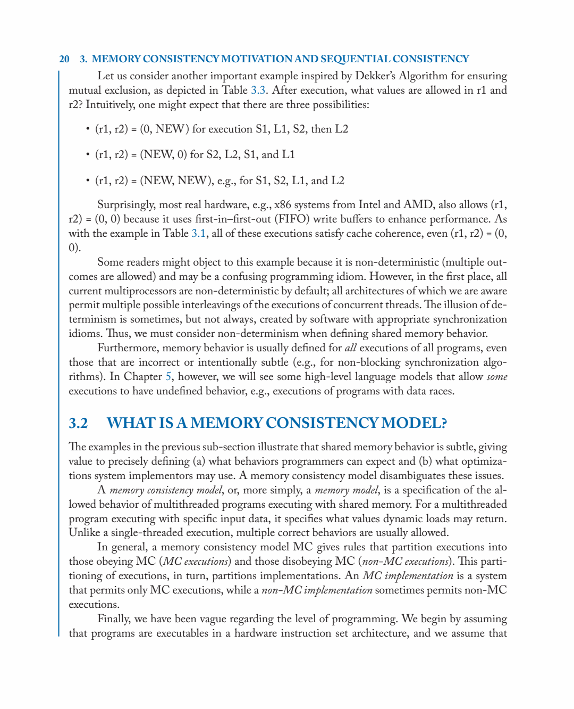
原书第 21 页PDF 43
ENGLISHmemory accesses are to memory locations identified by physical addresses (i.e., we are not considering the impact of virtual memory and address translation). In Chapter 5, we will discuss issues with high-level languages (HLLs). We will see then, for example, that a compiler allocating a variable to a register can affect an HLL memory model in a manner similar to hardware reordering memory references.
中文内存访问针对由物理地址标识的内存位置，也就是暂不考虑虚拟内存和地址转换的影响。第5章将讨论高级语言（HLL）相关问题。届时可以看到，例如编译器将变量分配到寄存器的行为，也会影响高级语言内存模型，其效果类似于硬件对内存访问进行重排。
ENGLISH3.3 CONSISTENCY VS. COHERENCE
中文3.3 内存一致性与缓存一致性
ENGLISHChapter 2 defined cache coherence with two invariants that we informally repeat here. The SWMR invariant ensures that at any time for a memory location with a given address, either (a) one core may write (and read) the address or (b) zero or more cores may only read it. The Data-Value Invariant ensures that updates to the memory location are passed correctly so that cached copies of the memory location always contain the most recent version.
中文第2章用两个不变量定义缓存一致性，这里非形式化地重述如下。SWMR不变量确保：对于任意给定地址的内存位置，在任意时刻，要么（a）一个核可以写入并读取该地址，要么（b）零个或多个核只能读取它。数据值不变量确保对该内存位置的更新正确传递，使其缓存副本始终包含最新版本。
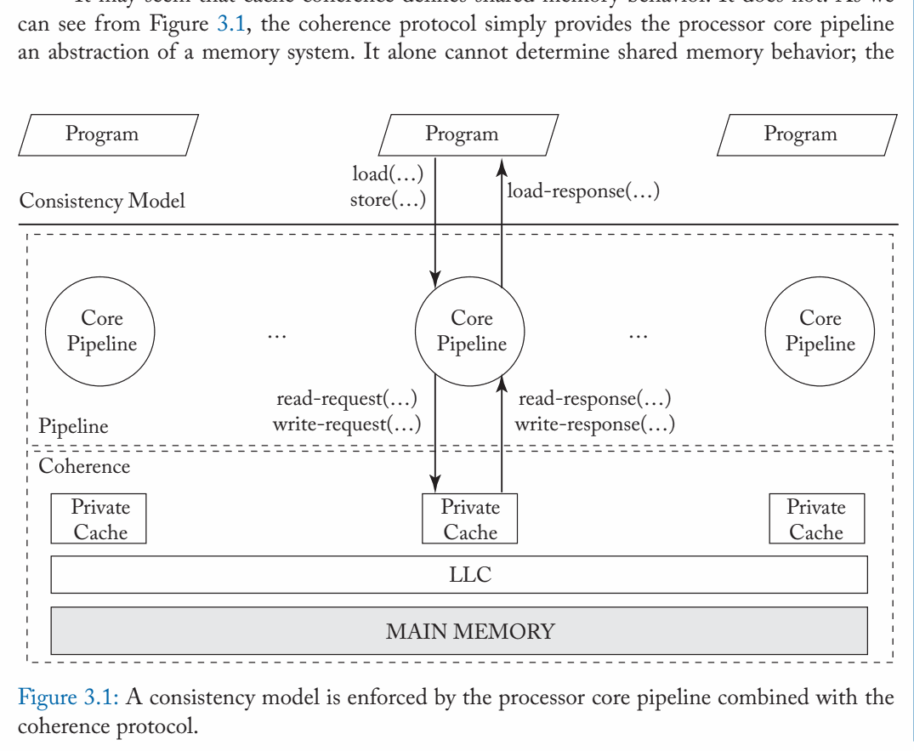
ENGLISHIt may seem that cache coherence defines shared memory behavior. It does not. As we can see from Figure 3.1, the coherence protocol simply provides the processor core pipeline an abstraction of a memory system. It alone cannot determine shared memory behavior; the
中文缓存一致性似乎定义了共享内存行为，但其实并非如此。如图3.1所示，缓存一致性协议只向处理器核流水线提供一个内存系统的抽象。仅靠它无法决定共享内存行为；
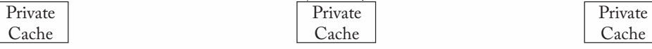
展开可搜索的英文文字
Private Private Private Cache Cache Cache展开可搜索的英文文字
LLC展开可搜索的英文文字
MAIN MEMORY查看 原书第 21 页 的完整原版面（PDF 43）
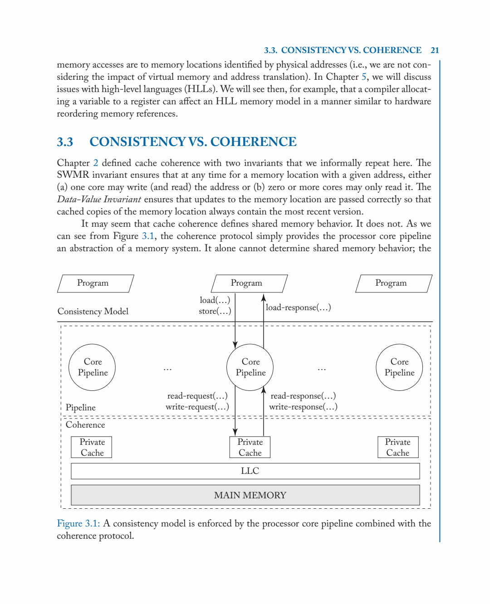
原书第 22 页PDF 44
ENGLISHpipeline matters, too. If, for example, the pipeline reorders and presents memory operations to the coherence protocol in an order contrary to program order—even if the coherence protocol does its job correctly—shared memory correctness may not ensue.
中文流水线也很重要。例如，如果流水线重排内存操作，并以不符合程序顺序的顺序将它们提交给缓存一致性协议，即便该协议正确完成自身职责，共享内存的正确性也可能无法保证。
ENGLISHIn summary:
中文归纳如下：
ENGLISH• Cache coherence does not equal memory consistency.
中文• 缓存一致性不等于内存一致性。
ENGLISH• A memory consistency implementation can use cache coherence as a useful “black box.”
中文• 内存一致性的实现可以将缓存一致性作为一个有用的“黑盒”。
ENGLISH3.4 BASIC IDEA OF SEQUENTIAL CONSISTENCY (SC)
中文3.4 顺序一致性（SC）的基本思想
ENGLISHArguably the most intuitive memory consistency model is SC. It was first formalized by Lamport [12], who called a single processor (core) sequential if “the result of an execution is the same as if the operations had been executed in the order specified by the program.” He then called a multiprocessor sequentially consistent if “the result of any execution is the same as if the operations of all processors (cores) were executed in some sequential order, and the operations of each individual processor (core) appear in this sequence in the order specified by its program.” This total order of operations is called memory order. In SC, memory order respects each core’s program order, but other consistency models may permit memory orders that do not always respect the program orders.
中文SC可以说是最直观的内存一致性模型。Lamport[12]首次对它进行了形式化：若单处理器（核）的“执行结果与按照程序规定顺序执行各操作所得的结果相同”，则称该处理器具有顺序性。进一步，若多处理器的“任意执行结果，都与所有处理器（核）的操作按照某种顺序执行的结果相同，且每个处理器（核）的操作在该序列中均按其程序规定的顺序出现”，则称其满足顺序一致性。这个操作全序称为内存顺序。在SC中，内存顺序遵循各核的程序顺序；而其他内存一致性模型可能允许并非始终遵循程序顺序的内存顺序。
中文图3.2给出表3.1中程序的一次执行。中间竖直
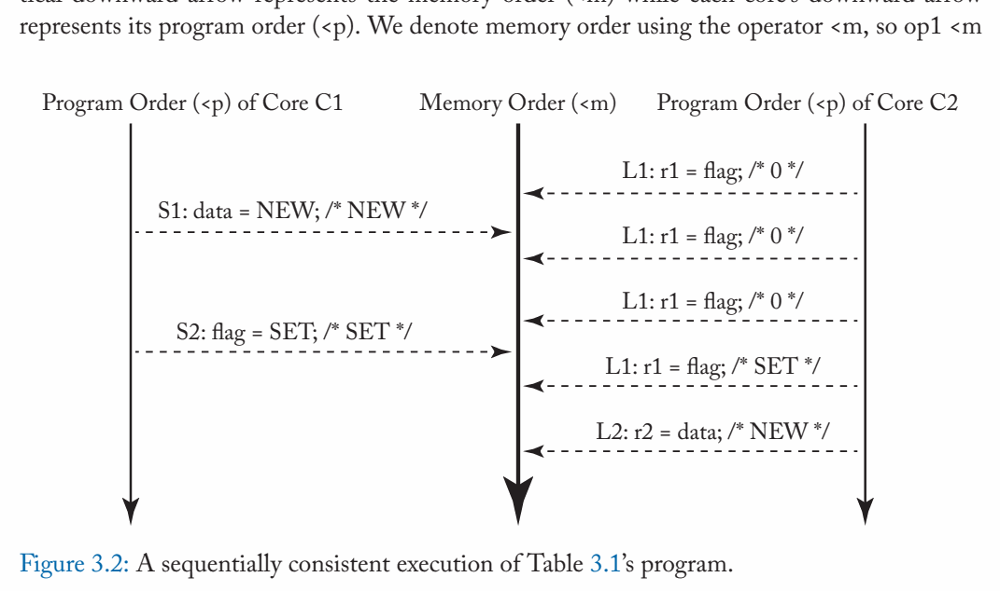
ENGLISHtical downward arrow represents the memory order (<m) while each core’s downward arrow represents its program order (<p). We denote memory order using the operator <m, so op1 <m
中文向下的箭头表示内存顺序（<m），各核的向下箭头表示其程序顺序（<p）。我们用运算符<m表示内存顺序，因此op1 <m
查看 原书第 22 页 的完整原版面（PDF 44）
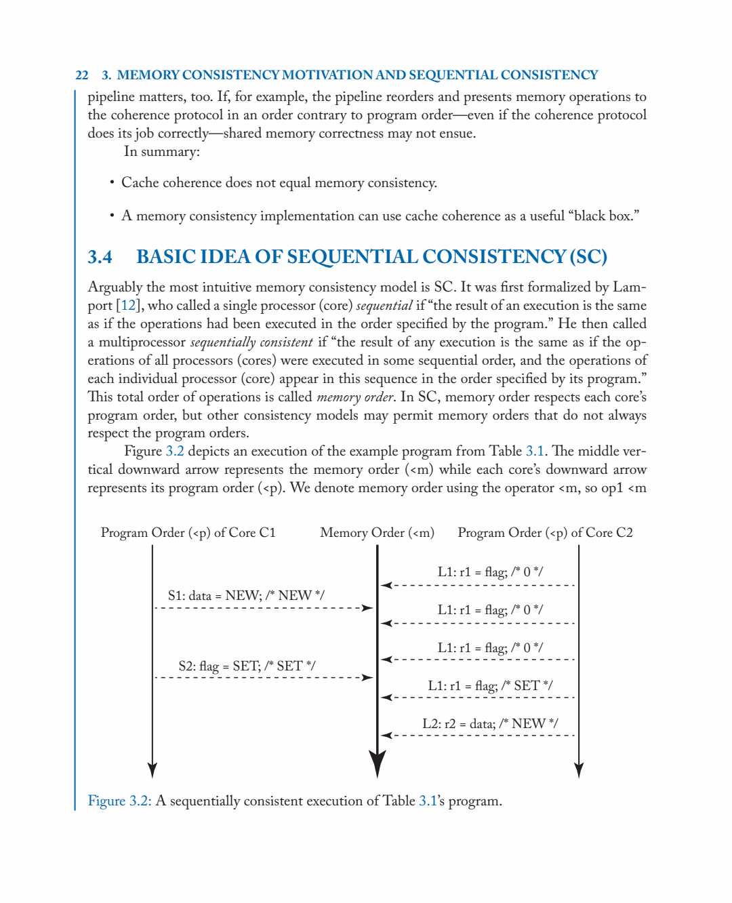
原书第 23 页PDF 45
ENGLISHop2 implies that op1 precedes op2 in memory order. Similarly, we use the operator <p to denote program order for a given core, so op1 <p op2 implies that op1 precedes op2 in that core’s program order. Under SC, memory order respects each core’s program order. “Respects” means that op1 <p op2 implies op1 <m op2. The values in comments (/* ... */) give the value loaded or stored. This execution terminates with r2 being NEW. More generally, all executions of Table 3.1’s program terminate with r2 as NEW. The only non-determinism—how many times L1 loads flag as 0 before it loads the value SET once—is unimportant.

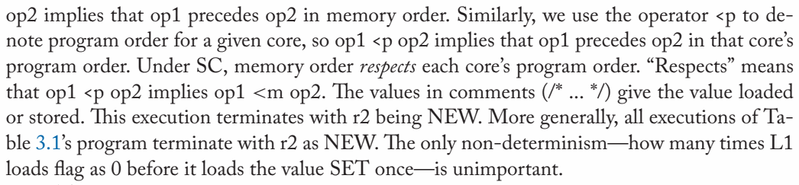
数学符号与上下标以此原版面为准中文op2表示op1在内存顺序中先于op2。类似地，用运算符<p表示给定核的程序顺序，因此op1 <p op2表示op1在该核的程序顺序中先于op2。SC要求内存顺序遵循各核的程序顺序。“遵循”意味着：若op1 <p op2，则op1 <m op2。注释（/* ... */）中的值表示 load 或 store 的数据值。本次执行结束时r2为NEW。更一般地，在SC下，表3.1中程序的所有终止执行都会使r2为NEW。唯一的非确定性是L1在首次读到SET之前读到多少次0，而这一点并不重要。
ENGLISHThis example illustrates the value of SC. In Section 3.1, if you expected that r2 must be NEW, you were perhaps independently inventing SC, albeit less precisely than Lamport.
中文该例说明了SC的价值。如果在3.1节中你认为r2必须为NEW，那么你可能已经独立地构想出了SC，只是没有Lamport的表述那样精确。
ENGLISHThe value of SC is further revealed in Figure 3.3, which illustrates four executions of the program from Table 3.3. Figure 3.3a–c depict SC executions that correspond to the three intuitive outputs: (r1, r2) = (0, NEW), (NEW, 0), or (NEW, NEW). Note that Figure 3.3c depicts only one of the four possible SC executions that leads to (r1, r2) = (NEW, NEW); this execution is {S1, S2, L1, L2}, and the others are {S1, S2, L2, L1}, {S2, S1, L1, L2}, and {S2, S1, L2, L1}. Thus, across Figure 3.3a–c, there are six legal SC executions.
中文图3.3进一步体现了SC的价值，它展示表3.3中程序的四种执行。图3.3a—c为SC执行，对应三种直观结果：(r1, r2) = (0, NEW)、(NEW, 0)或(NEW, NEW)。注意，图3.3c仅给出产生(NEW, NEW)的四种SC执行之一，即{S1, S2, L1, L2}；其余三种为{S1, S2, L2, L1}、{S2, S1, L1, L2}和{S2, S1, L2, L1}。因此，图3.3a—c合计对应六种合法的SC执行。
ENGLISHFigure 3.3d shows a non-SC execution corresponding to the output (r1, r2) = (0, 0). For
中文图3.3d展示一种非SC执行，其结果为(r1, r2) = (0, 0)。对于
ENGLISHthis output, there is no way to create a memory order that respects program orders. Program order dictates that:
中文这一结果，不存在能够遵循程序顺序的内存顺序。程序顺序要求：
ENGLISH• S1 <p L1
中文• S1 <p L1。
ENGLISH• S2 <p L2
中文• S2 <p L2。
ENGLISHBut memory order dictates that:
中文但要得到该结果，内存顺序要求：
ENGLISH• L1 <m S2 (so r1 is 0)
中文• L1 <m S2，因此r1为0。
ENGLISH• L2 <m S1 (so r2 is 0)
中文• L2 <m S1，因此r2为0。
ENGLISHHonoring all these constraints results in a cycle, which is inconsistent with a total order. The extra arcs in Figure 3.3d illustrate the cycle.
中文同时满足所有约束会形成环，与全序不相容。图3.3d中的附加弧线展示了这个环。
ENGLISHWe have just seen six SC executions and one non-SC execution. This can help us understand SC implementations: an SC implementation must allow one or more of the first six executions, but cannot allow the seventh execution.
中文我们刚刚考察了六种SC执行与一种非SC执行，这有助于理解SC实现：SC实现必须允许前六种执行中的一种或多种，但不能允许第七种。
ENGLISH3.5 A LITTLE SC FORMALISM
中文3.5 SC的简要形式化描述
ENGLISHIn this section, we define SC more precisely, especially to allow us to compare SC with the weaker consistency models in the next two chapters. We adopt the formalism of Weaver and Germond [20]—an axiomatic method to specify consistency which we discuss more in Chapter 11—with the following notation: L(a) and S(a) represent a load and a store, respectively, to address a. Orders <p and <m define program and global memory order, respectively. Program
中文本节更精确地定义SC，尤其为后两章与更弱的一致性模型进行比较做准备。我们采用Weaver与Germond[20]的形式化方法，这是一种规定内存一致性的公理化方法，第11章将进一步讨论。使用如下记号：L(a)和S(a)分别表示对地址a的 load 和 store；<p和<m分别表示程序顺序与全局内存顺序。程序
查看 原书第 23 页 的完整原版面（PDF 45）
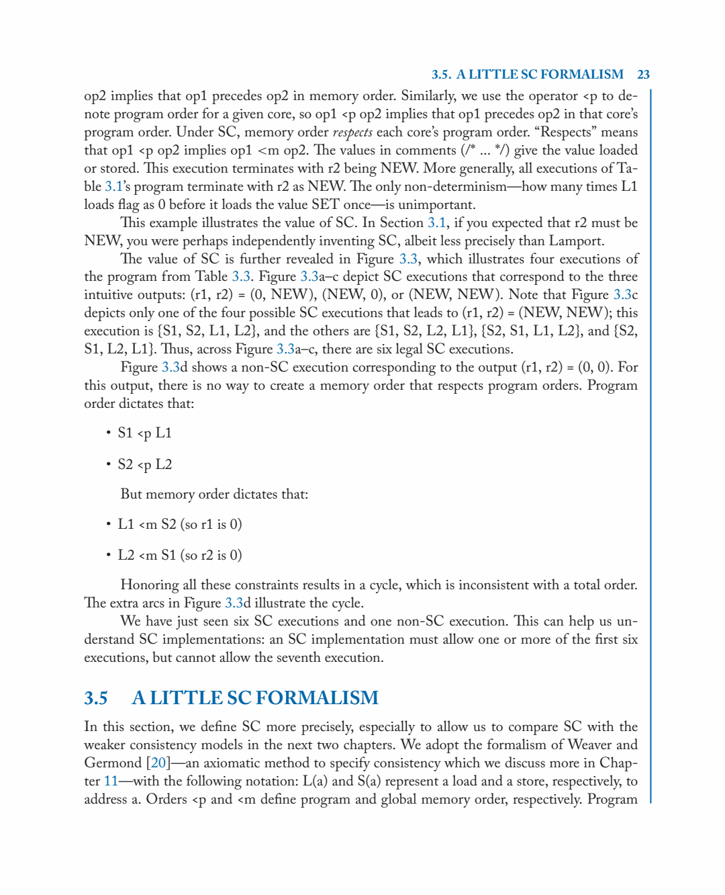
原书第 24 页PDF 46
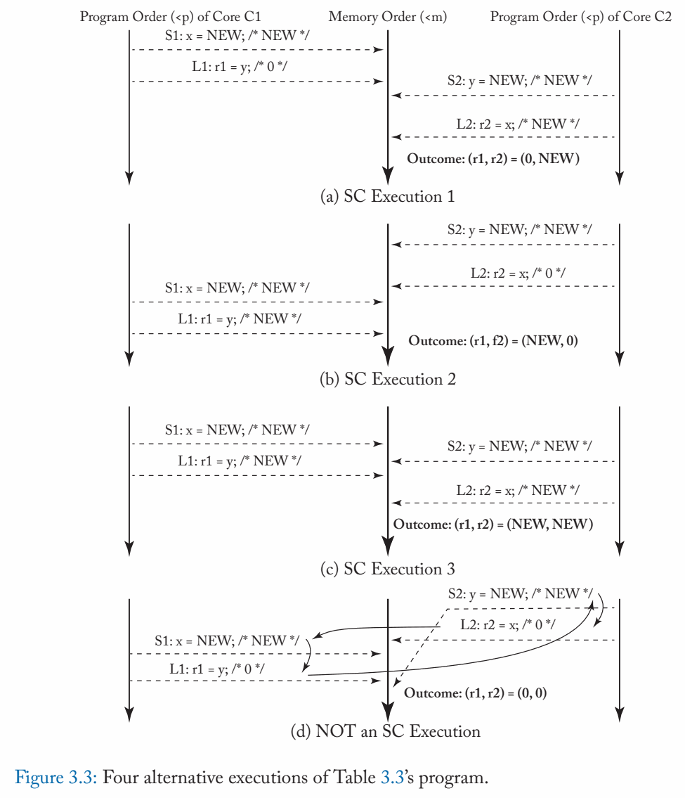
查看 原书第 24 页 的完整原版面（PDF 46）
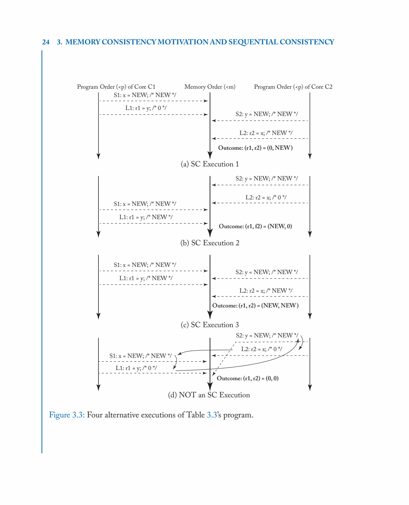
原书第 25 页PDF 47
ENGLISHorder <p is a per-core total order that captures the order in which each core logically (sequentially) executes memory operations. Global memory order <m is a total order on the memory operations of all cores.
中文顺序<p是每个核内部的全序，描述该核在逻辑上顺序执行内存操作的次序。全局内存顺序<m是所有核的内存操作构成的全序。
ENGLISHAn SC execution requires the following.
中文SC执行要求满足以下条件。
ENGLISH(1) All cores insert their loads and stores into the order <m respecting their program order, regardless of whether they are to the same or different addresses (i.e., a=b or a b). There ⁄ are four cases:

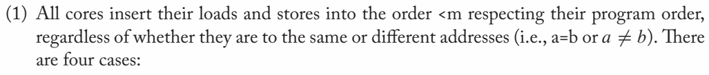
数学符号与上下标以此原版面为准中文（1）所有核都必须按照各自的程序顺序，将 load 和 store 插入<m中，无论它们访问相同地址还是不同地址，即a = b或a ≠ b。共有四种情形：

中文• 若L(a) <p L(b)，则L(a) <m L(b)。/* load→load */

中文• 若L(a) <p S(b)，则L(a) <m S(b)。/* load→store */

中文• 若S(a) <p S(b)，则S(a) <m S(b)。/* store→store */
ENGLISH• If S(a) <p L(b) S(a) <m L(b) /* Store Load */ ) ! (2) Every load gets its value from the last store before it (in global memory order) to the same address:

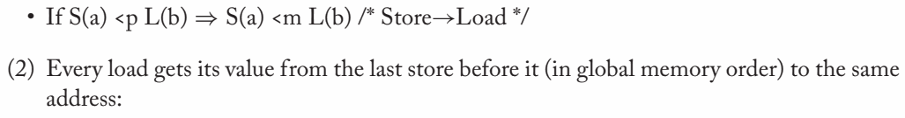
数学符号与上下标以此原版面为准中文• 若S(a) <p L(b)，则S(a) <m L(b)。/* store→load */
（2）每个 load 都从全局内存顺序中位于它之前、针对同一地址的最后一次 store 取得值：
（2）每个 load 都从全局内存顺序中位于它之前、针对同一地址的最后一次 store 取得值：
ENGLISHValue of L(a) = Value of MAX {S(a) | S(a) <m L(a)}, where MAX denotes “latest <m <m in memory order.”
中文Value of L(a) = Value of MAX_<m {S(a) | S(a) <m L(a)}，其中MAX_<m表示“在内存顺序中最后发生的操作”。
ENGLISHAtomic read-modify-write (RMW ) instructions, which we discuss in more depth in Section 3.9, further constrain allowed executions. Each execution of a test-and-set instruction, for example, requires that the load for the test and the store for the set logically appear consecutively in the memory order (i.e., no other memory operations for the same or different addresses interpose between them).
中文原子读—改—写（RMW）指令会进一步约束允许的执行，3.9节将对此详细讨论。例如，每次test-and-set指令执行，都要求测试对应的 load 和置位对应的 store 在内存顺序中逻辑上连续出现，即它们之间不得插入任何针对相同地址或不同地址的其他内存操作。
ENGLISHWe summarize SC’s ordering requirements in Table 3.4. The table specifies which program orderings are enforced by the consistency model. For example, if a given thread has a load before a store in program order (i.e., the load is “Operation 1” and the store is “Operation 2” in the table), then the table entry at this intersection is an “X” which denotes that these operations must be performed in program order. For SC, all memory operations must appear to perform in program order; under other consistency models, which we study in the next two chapters, some of these ordering constraints are relaxed (i.e., some entries in their ordering tables do not contain an “X”).
中文表3.4汇总SC的顺序要求，规定内存一致性模型必须保证哪些程序顺序。例如，某线程中 load 在程序顺序上先于 store，即表中的“操作1”为 load、“操作2”为 store，则交叉单元格中的“X”表示两者必须按程序顺序执行。对于SC，所有内存操作都必须表现为按程序顺序执行。后两章讨论的其他模型会放松部分顺序约束，即相应排序表的某些单元格没有“X”。
ENGLISHAn SC implementation permits only SC executions. Strictly speaking, this is the safety property for SC implementations (do no harm). SC implementations should also have some liveness properties (do some good). Specifically, a store must become eventually visible to a load that is repeatedly attempting to load that location. This property, referred to as eventual writepropagation, is typically ensured by the coherence protocol. More generally, starvation avoidance and some fairness are also valuable, but these issues are beyond the scope of this discussion.
中文SC实现只允许SC执行。严格地说，这描述的是SC实现的安全性性质，即不产生错误行为。SC实现还应具备某些活性性质，即最终取得进展。具体而言，如果 load 不断尝试读取某个位置，那么对该位置的 store 最终必须对它可见。这一性质称为写操作最终传播，通常由缓存一致性协议保证。更一般地，避免饥饿并提供一定公平性也很有价值，但这些问题超出本节讨论范围。
查看 原书第 25 页 的完整原版面（PDF 47）
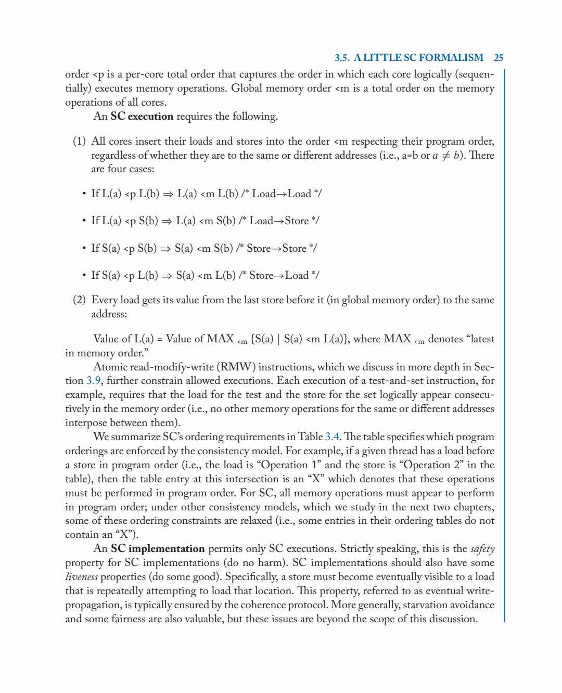
原书第 26 页PDF 48
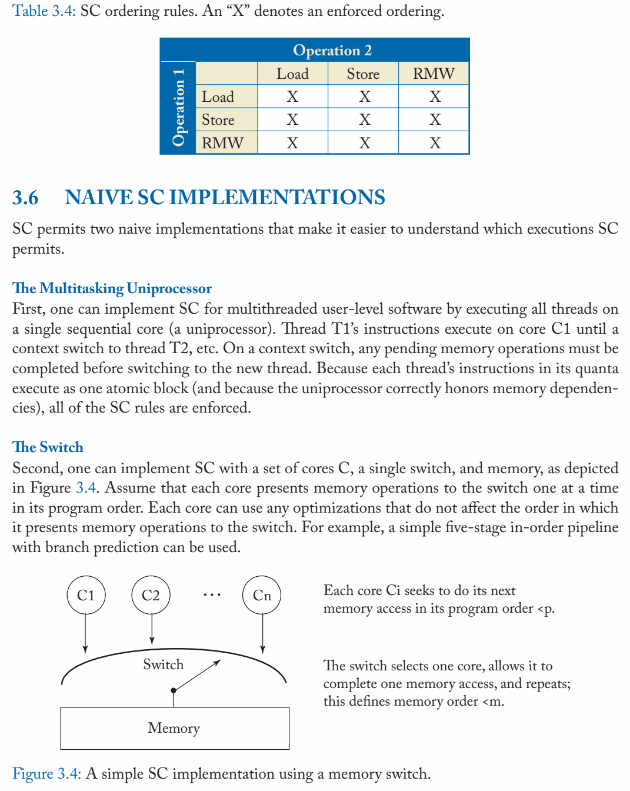
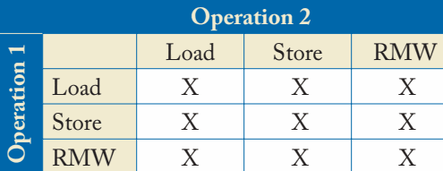
展开可搜索的英文文字
Operation 2 1 noitarepO Load Store RMW Load X X X Store X X X RMW X X XENGLISH3.6 NAIVE SC IMPLEMENTATIONS
中文3.6 朴素的SC实现
ENGLISHSC permits two naive implementations that make it easier to understand which executions SC permits.
中文SC允许两种朴素实现，有助于理解SC允许哪些执行。
ENGLISHThe Multitasking Uniprocessor First, one can implement SC for multithreaded user-level software by executing all threads on a single sequential core (a uniprocessor). Thread T1’s instructions execute on core C1 until a context switch to thread T2, etc. On a context switch, any pending memory operations must be completed before switching to the new thread. Because each thread’s instructions in its quanta execute as one atomic block (and because the uniprocessor correctly honors memory dependencies), all of the SC rules are enforced.
中文多任务单处理器
首先，可以在一个顺序执行的处理器核（单处理器）上执行所有线程，从而为用户态多线程软件实现SC。线程T1的指令在C1上执行，直到上下文切换至T2，以此类推。上下文切换时，必须先完成全部尚未完成的内存操作，再切换至新线程。由于每个线程在一个时间片内的指令作为一个原子块执行，而且单处理器正确遵循内存依赖，因而所有SC规则都得到保证。
首先，可以在一个顺序执行的处理器核（单处理器）上执行所有线程，从而为用户态多线程软件实现SC。线程T1的指令在C1上执行，直到上下文切换至T2，以此类推。上下文切换时，必须先完成全部尚未完成的内存操作，再切换至新线程。由于每个线程在一个时间片内的指令作为一个原子块执行，而且单处理器正确遵循内存依赖，因而所有SC规则都得到保证。
ENGLISHThe Switch Second, one can implement SC with a set of cores C, a single switch, and memory, as depicted in Figure 3.4. Assume that each core presents memory operations to the switch one at a time in its program order. Each core can use any optimizations that do not affect the order in which it presents memory operations to the switch. For example, a simple five-stage in-order pipeline with branch prediction can be used.
中文交换开关
其次，可由一组处理器核C、一个交换开关和内存实现SC，如图3.4所示。假定每个核按程序顺序，每次向交换开关提交一个内存操作。只要不改变向交换开关提交内存操作的顺序，各核就可以采用任何优化，例如带分支预测的简单五级顺序流水线。
其次，可由一组处理器核C、一个交换开关和内存实现SC，如图3.4所示。假定每个核按程序顺序，每次向交换开关提交一个内存操作。只要不改变向交换开关提交内存操作的顺序，各核就可以采用任何优化，例如带分支预测的简单五级顺序流水线。
查看 原书第 26 页 的完整原版面（PDF 48）
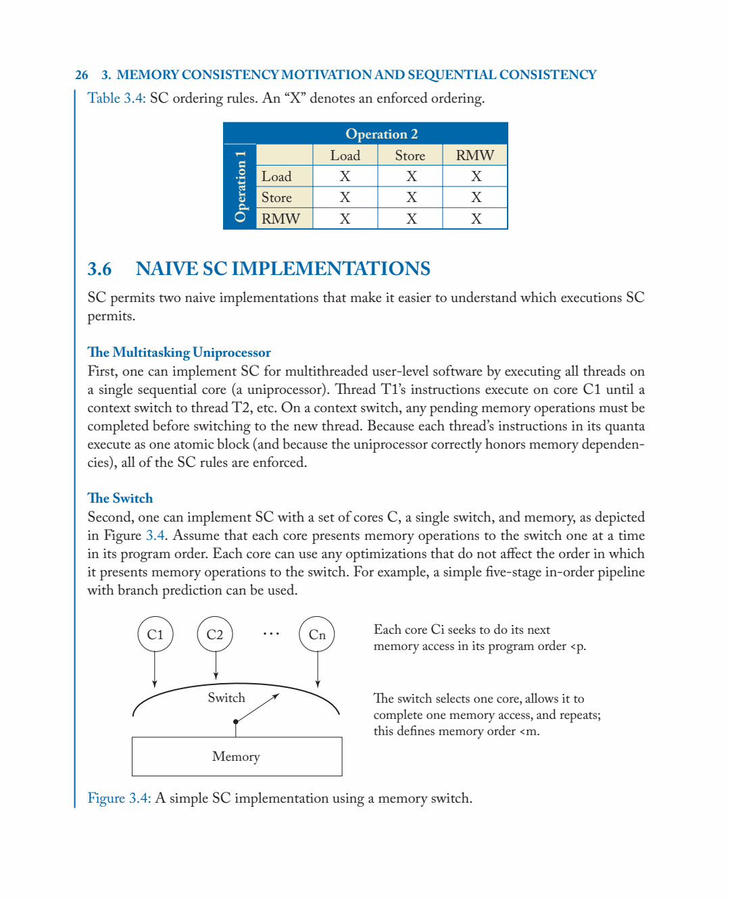
原书第 27 页PDF 49
ENGLISHAssume next that the switch picks one core, allows memory to fully satisfy the load or store, and repeats this process as long as requests exist. The switch may pick cores by any method (e.g., random) that does not starve a core with a ready request. This implementation operationally implements SC by construction.
中文再假定交换开关选择一个核，让内存完整完成该核的 load 或 store，只要仍有请求就重复这一过程。交换开关可使用任意选择方式，例如随机选择，但不能使已有就绪请求的核饥饿。按照这种构造，其操作行为自然满足SC。
ENGLISHAssessment The good news from these implementations is that they provide operational models defining (1) allowed SC executions and (2) SC implementation “gold standards.” (In Chapter 11, we will see that such operational models can be used to formally specify consistency models.) The switch implementation also serves as an existence proof that SC can be implemented without caches or coherence.
中文评价
这些实现的优点是提供了操作性模型，用于定义：（1）允许的SC执行；（2）SC实现的“黄金标准”。第11章将介绍，如何用这类操作性模型形式化规定内存一致性模型。交换开关实现也证明了，不使用缓存或缓存一致性，同样可以实现SC。
这些实现的优点是提供了操作性模型，用于定义：（1）允许的SC执行；（2）SC实现的“黄金标准”。第11章将介绍，如何用这类操作性模型形式化规定内存一致性模型。交换开关实现也证明了，不使用缓存或缓存一致性，同样可以实现SC。
ENGLISHThe bad news, of course, is that the performance of these implementations does not scale up with increasing core count, due to the sequential bottleneck of using a single core in the first case and the single switch/memory in the second case. These bottlenecks have led some people to incorrectly conclude that SC precludes true parallel execution. It does not, as we will see next.
中文当然，它们的缺点是性能无法随核数增加而扩展，因为前一种实现受限于单个处理器核，后一种受限于单个交换开关与内存，均存在串行瓶颈。这些瓶颈使某些人误以为SC排斥真正的并行执行。事实并非如此，下面就会说明。
ENGLISH3.7 A BASIC SC IMPLEMENTATION WITH CACHE COHERENCE
中文3.7 借助缓存一致性的基本SC实现
ENGLISHCache coherence facilitates SC implementations that can execute non-conflicting loads and stores—two operations conflict if they are to the same address and at least one of them is a store—completely in parallel. Moreover, creating such a system is conceptually simple.
中文缓存一致性使SC实现能够完全并行地执行互不冲突的 load 和 store。如果两个操作访问相同地址，且至少一个是 store，就称两者冲突。此外，构造这种系统在概念上很简单。
ENGLISHHere, we treat coherence as mostly a black box that implements the SWMR invariant of Chapter 2. We provide some implementation intuition by opening the coherence block box slightly to reveal simple level-one (L1) caches that:
中文这里，我们主要将缓存一致性视为实现第2章SWMR不变量的黑盒。为帮助理解实现，我们稍微打开这个黑盒，考察简单的一级（L1）缓存，它们：
ENGLISH• use state modified (M) to denote an L1 block that one core can write and read,
中文• 使用已修改状态（M）表示某个核可读可写的L1缓存块；
ENGLISH• use state shared (S) to denote an L1 block that one or more cores can only read, and
中文• 使用共享状态（S）表示一个或多个核只可读取的L1缓存块；
ENGLISH• have GetM and GetS denote coherence requests to obtain a block in M and S, respectively.
中文• 分别用GetM和GetS表示请求获得M状态和S状态缓存块的缓存一致性请求。
ENGLISHWe do not require a deep understanding of how coherence is implemented, as discussed in Chapter 6 and beyond.
中文这里不要求深入理解缓存一致性的实现；相关内容将在第6章及后续章节讨论。
ENGLISHFigure 3.5a depicts the model of Figure 3.4 with the switch and memory replaced by a
中文图3.5a在图3.4模型的基础上，将交换开关与内存替换为
ENGLISHcache-coherent memory system represented as a black box. Each core presents memory operations to the cache-coherent memory system one at a time in its program order. The memory system fully satisfies each request before beginning the next request for the same core.
中文以黑盒表示的、支持缓存一致性的内存系统。每个核按程序顺序，每次向该内存系统提交一个内存操作。对于同一个核，内存系统必须完整完成当前请求，才开始处理下一个请求。
ENGLISHFigure 3.5b “opens” the memory system black box a little to reveal that each core connects
中文图3.5b稍微“打开”内存系统黑盒，可以看到每个核连接
ENGLISHto its own L1 cache (we will talk about multithreading later). The memory system can respond to a load or store to block B if it has B with appropriate coherence permissions (state M or S for loads and M for stores). Moreover, the memory system can respond to requests from different
中文自己的L1缓存，多线程将在后面讨论。若内存系统已持有缓存块B，且具有适当的缓存一致性权限，即 load 要求M或S状态，store 要求M状态，就可以响应针对B的 load 或 store。此外，只要相应的L1缓存具有适当权限，内存系统就可以并行响应来自不同
查看 原书第 27 页 的完整原版面（PDF 49）
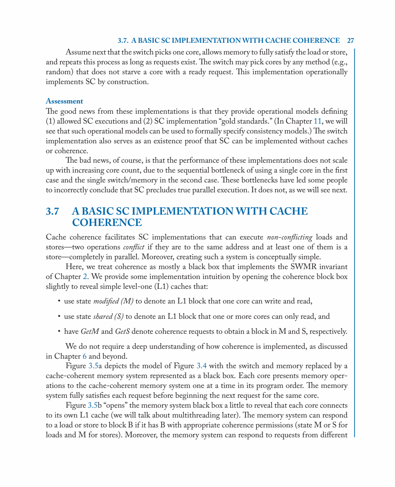
原书第 28 页PDF 50
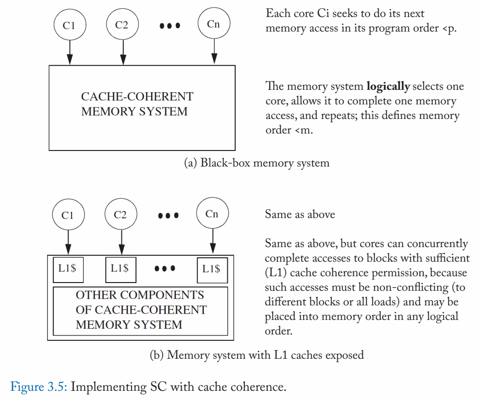
ENGLISHcores in parallel, provided that the corresponding L1 caches have the appropriate permissions. For example, Figure 3.6a depicts the cache states before four cores each seek to do a memory operation. The four operations do not conflict, can be satisfied by their respective L1 caches, and therefore can be done concurrently. As depicted in Figure 3.6b, we can arbitrarily order these operations to obtain a legal SC execution model. More generally, operations that can be satisfied by L1 caches always can be done concurrently because coherence’s SWMR invariant ensures they are non-conflicting.
中文核的请求。例如，图3.6a展示四个核各自准备执行一次内存操作之前的缓存状态。这四个操作互不冲突，都可由各自的L1缓存完成，因此能够并发执行。如图3.6b所示，我们可以对这些操作任意排序，得到合法的SC执行模型。更一般地，能够由L1缓存完成的操作始终可以并发执行，因为缓存一致性的SWMR不变量保证它们互不冲突。
ENGLISHAssessment We have created an implementation of SC that:
中文评价
我们构造了一个具有以下特点的SC实现：
我们构造了一个具有以下特点的SC实现：
ENGLISH• fully exploits the latency and bandwidth benefits of caches,
中文• 充分利用缓存带来的延迟和带宽优势；
ENGLISH• is as scalable as the cache coherence protocol it uses, and
中文• 具有与所用缓存一致性协议相同的可扩展性；
ENGLISH• decouples the complexities of implementing cores from implementing coherence.
中文• 将处理器核实现的复杂性与缓存一致性实现的复杂性解耦。
查看 原书第 28 页 的完整原版面（PDF 50）
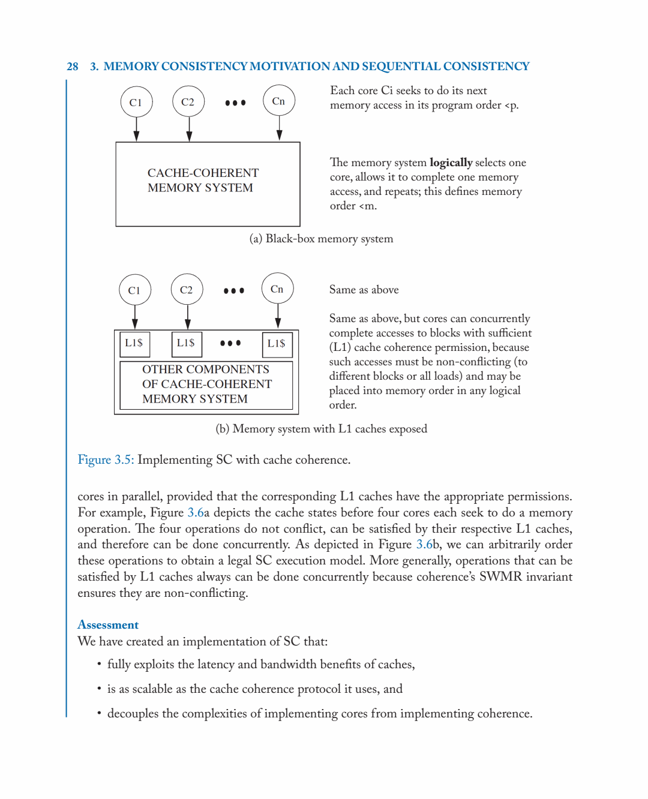
原书第 29 页PDF 51
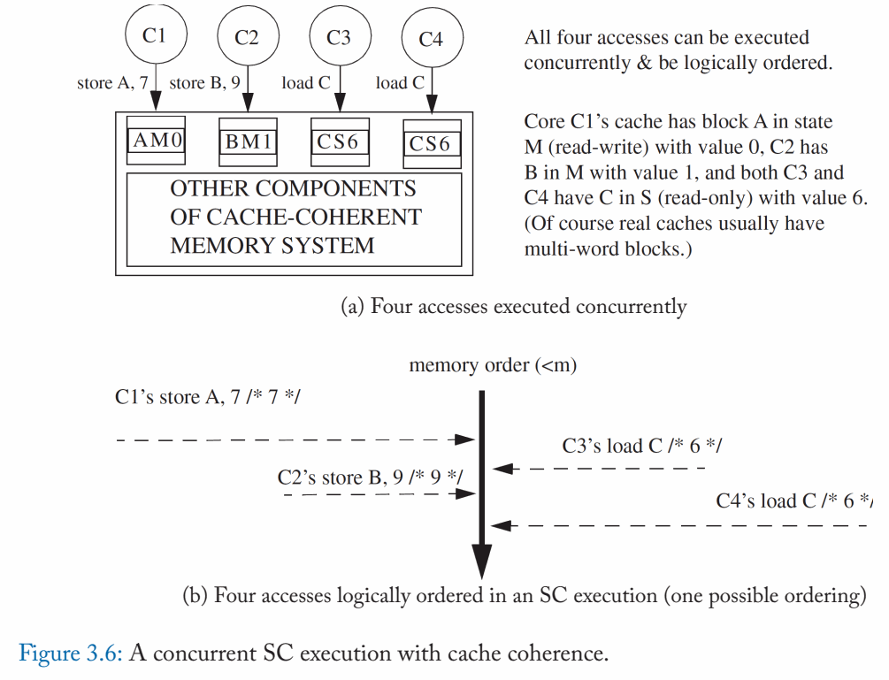
ENGLISH3.8 OPTIMIZED SC IMPLEMENTATIONS WITH CACHE COHERENCE
中文3.8 借助缓存一致性的优化SC实现
ENGLISHMost real core implementations are more complicated than our basic SC implementation with cache coherence. Cores employ features like prefetching, speculative execution, and multithreading in order to improve performance and tolerate memory access latencies. These features interact with the memory interface, and we now discuss how these features impact the implementation of SC. It is worth bearing in mind that any feature or optimization is legal as long as it does not produce an end result (values returned by loads) that violates SC.
中文大多数实际处理器核比上述基本SC实现复杂。为提高性能并容忍内存访问延迟，它们会采用预取、推测执行、多线程等机制。这些机制都与内存接口交互，下面讨论它们对SC实现的影响。应始终记住：只要最终结果，也就是 load 返回的值，不违反SC，任何机制或优化都是合法的。
ENGLISHNon-Binding Prefetching A non-binding prefetch for block B is a request to the coherent memory system to change B’s coherence state in one or more caches. Most commonly, prefetches are requested by software, core hardware, or the cache hardware to change B’s state in the level-one cache to permit loads (e.g., B’s state is M or S) or loads and stores (B’s state is M) by issuing coherence requests such
中文非绑定预取
针对块B的非绑定预取，是向支持缓存一致性的内存系统发出请求，改变一个或多个缓存中B的缓存一致性状态。最常见的情况是由软件、处理器核硬件或缓存硬件发起预取，通过GetS、GetM等缓存一致性请求，改变L1缓存中B的状态，使其允许 load，例如M或S状态，或同时允许 load 和 store，即M状态。
针对块B的非绑定预取，是向支持缓存一致性的内存系统发出请求，改变一个或多个缓存中B的缓存一致性状态。最常见的情况是由软件、处理器核硬件或缓存硬件发起预取，通过GetS、GetM等缓存一致性请求，改变L1缓存中B的状态，使其允许 load，例如M或S状态，或同时允许 load 和 store，即M状态。
查看 原书第 29 页 的完整原版面（PDF 51）
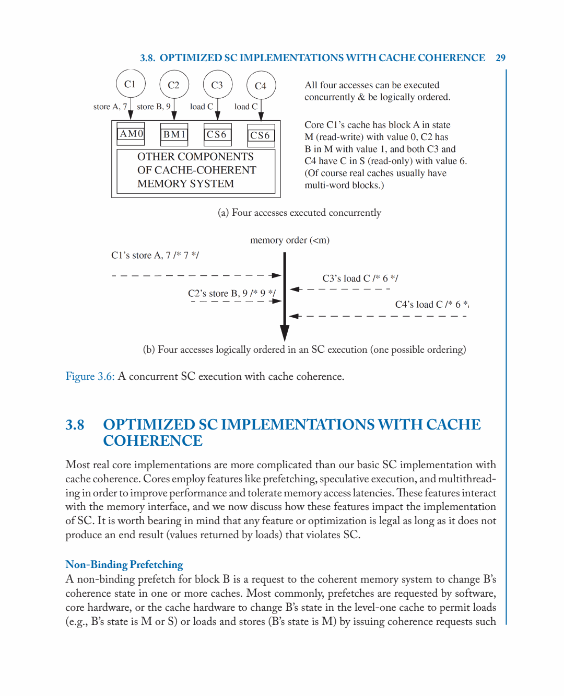
原书第 30 页PDF 52
ENGLISHas GetS and GetM. Importantly, in no case does a non-binding prefetch change the state of a register or data in block B. The effect of the non-binding prefetch is limited to within the “cachecoherent memory system” block of Figure 3.5a, making the effect of non-binding prefetches on the memory consistency model to be the functional equivalent of a no-op. So long as the loads and stores are performed in program order, it does not matter in what order coherence permissions are obtained.
中文关键在于，非绑定预取在任何情况下都不会改变寄存器状态，也不会改变块B中的数据。它的影响仅限于图3.5a中的“支持缓存一致性的内存系统”内部，因此从内存一致性模型的角度看，非绑定预取在功能上等价于空操作。只要 load 和 store 按程序顺序执行，取得缓存一致性权限的先后顺序就无关紧要。
ENGLISHImplementations may do non-binding prefetches without affecting the memory consistency model. This is useful for both internal cache prefetching (e.g., stream buffers) and more aggressive cores.
中文实现可以执行非绑定预取，而不影响内存一致性模型。这既有利于缓存内部预取，例如流缓冲区，也有利于更激进的处理器核设计。
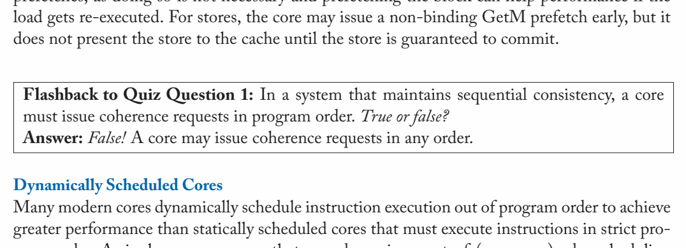
ENGLISHSpeculative Cores Consider a core that executes instructions in program order, but also does branch prediction wherein subsequent instructions, including loads and stores, begin execution, but may be squashed (i.e., have their effects nullified) on a branch misprediction. These squashed loads and stores can be made to look like non-binding prefetches, enabling this speculation to be correct because it has no effect on SC. A load after a branch prediction can be presented to the L1 cache, wherein it either misses (causing a non-binding GetS prefetch) or hits and then returns a value to a register. If the load is squashed, the core discards the register update, erasing any functional effect from the load—as if it never happened. The cache does not undo non-binding prefetches, as doing so is not necessary and prefetching the block can help performance if the load gets re-executed. For stores, the core may issue a non-binding GetM prefetch early, but it does not present the store to the cache until the store is guaranteed to commit.
中文采用推测执行的处理器核
考虑一个按程序顺序执行指令、同时采用分支预测的核。预测之后的指令，包括 load 和 store，可以开始执行；若分支预测错误，则可能被撤销，即其作用被消除。这些被撤销的 load 和 store 可以表现为非绑定预取，因而不影响SC，使该推测机制保持正确。预测分支之后的 load 可以提交给L1缓存：若缺失，则触发非绑定GetS预取；若命中，则向寄存器返回值。如果 load 被撤销，核丢弃寄存器更新，消除该 load 的全部功能影响，仿佛它从未发生。缓存不必撤销非绑定预取，因为这没有必要，而且若 load 重新执行，预取该块还有助于性能。对于 store，核可以提前发出非绑定GetM预取，但只有确定该 store 会提交后，才将 store 本身提交给缓存。
考虑一个按程序顺序执行指令、同时采用分支预测的核。预测之后的指令，包括 load 和 store，可以开始执行；若分支预测错误，则可能被撤销，即其作用被消除。这些被撤销的 load 和 store 可以表现为非绑定预取，因而不影响SC，使该推测机制保持正确。预测分支之后的 load 可以提交给L1缓存：若缺失，则触发非绑定GetS预取；若命中，则向寄存器返回值。如果 load 被撤销，核丢弃寄存器更新，消除该 load 的全部功能影响，仿佛它从未发生。缓存不必撤销非绑定预取，因为这没有必要，而且若 load 重新执行，预取该块还有助于性能。对于 store，核可以提前发出非绑定GetM预取，但只有确定该 store 会提交后，才将 store 本身提交给缓存。
ENGLISHFlashback to Quiz Question 1: In a system that maintains sequential consistency, a core must issue coherence requests in program order. True or false? Answer: False! A core may issue coherence requests in any order.
中文回顾测验问题1：在维持顺序一致性的系统中，处理器核必须按程序顺序发出缓存一致性请求。对还是错？答案：错！核可以按任意顺序发出缓存一致性请求。
ENGLISHDynamically Scheduled Cores Many modern cores dynamically schedule instruction execution out of program order to achieve greater performance than statically scheduled cores that must execute instructions in strict program order. A single-core processor that uses dynamic or out-of-(program-)order scheduling must simply enforce true data dependences within the program. However, in the context of a multicore processor, dynamic scheduling introduces a new issue: memory consistency speculation. Consider a core that wishes to dynamically reorder the execution of two loads, L1 and L2 (e.g., because L2’s address is computed before L1’s address). Many cores will speculatively execute L2 before L1, and they are predicting that this reordering is not visible to other cores, which would violate SC.
中文动态调度处理器核
许多现代核通过动态调度，让指令不按程序顺序执行，以获得高于严格按程序顺序执行的静态调度核的性能。采用动态调度或乱序调度的单核处理器，只需保证程序中的真数据依赖。然而，在多核处理器中，动态调度引入了一个新问题：对内存一致性进行推测。考虑一个核希望动态重排 load L1与L2，例如L2的地址先于L1算出。许多核会推测性地先执行L2、后执行L1，其预测是这一重排不会被其他核观察到；若被观察到，就可能违反SC。
许多现代核通过动态调度，让指令不按程序顺序执行，以获得高于严格按程序顺序执行的静态调度核的性能。采用动态调度或乱序调度的单核处理器，只需保证程序中的真数据依赖。然而，在多核处理器中，动态调度引入了一个新问题：对内存一致性进行推测。考虑一个核希望动态重排 load L1与L2，例如L2的地址先于L1算出。许多核会推测性地先执行L2、后执行L1，其预测是这一重排不会被其他核观察到；若被观察到，就可能违反SC。
ENGLISHSpeculating on SC requires that the core verify that the prediction is correct. Gharachorloo et al. [8] presented two techniques for performing this check. First, after the core speculatively
中文对SC进行推测，要求处理器核验证预测是否正确。Gharachorloo等人[8]提出两种检查技术。第一种是在核推测性
查看 原书第 30 页 的完整原版面（PDF 52）
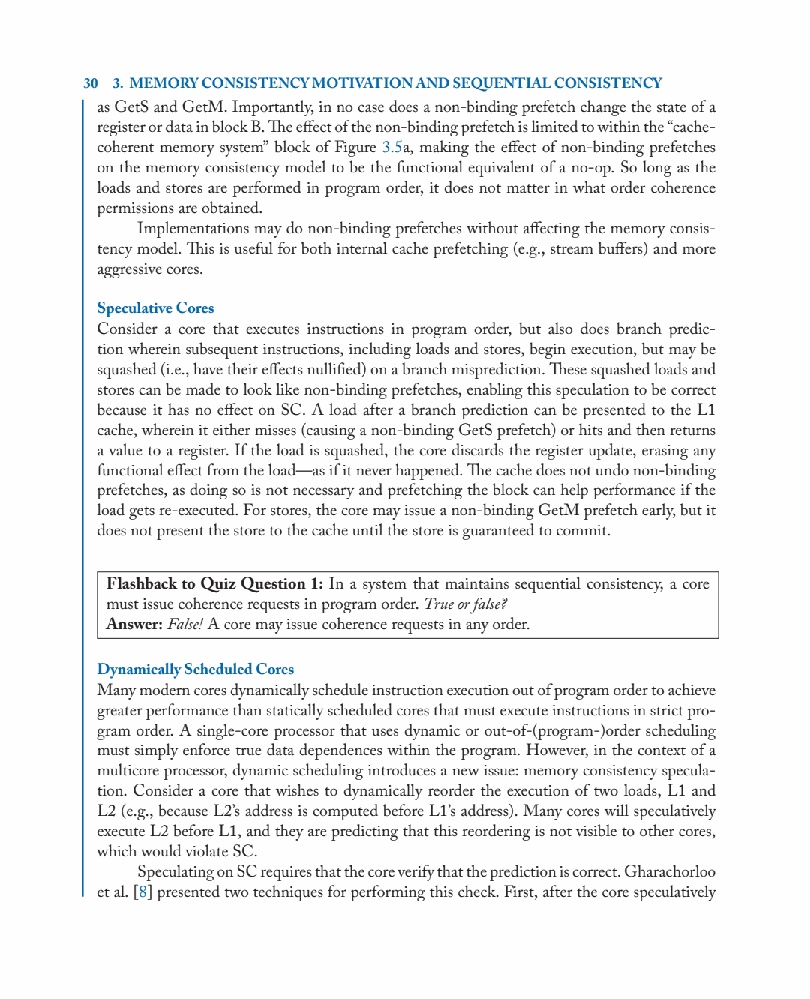
原书第 31 页PDF 53
ENGLISHexecutes L2, but before it commits L2, the core could check that the speculatively accessed block has not left the cache. So long as the block remains in the cache, its value could not have changed between the load’s execution and its commit. To perform this check, the core tracks the address loaded by L2 and compares it to blocks evicted and to incoming coherence requests. An incoming GetM indicates that another core could observe L2 out of order, and this GetM would imply a mis-speculation and squash the speculative execution.
中文执行L2之后、提交L2之前，检查推测访问的缓存块是否仍留在缓存中。只要该块没有离开缓存，其值就不可能在 load 执行与提交之间发生变化。为完成这一检查，核记录L2访问的地址，并将其与被替换的缓存块及到达的缓存一致性请求比较。到达的GetM表示另一个核可能观察到L2的乱序执行，因此意味着推测失败，必须撤销推测执行。
ENGLISHThe second checking technique is to replay each speculative load when the core is ready to commit the load2 [2, 17]. If the value loaded at commit does not equal the value that was previously loaded speculatively, then the prediction was incorrect. In the example, if the replayed load value of L2 is not the same as the originally loaded value of L2, then the load-load reordering has resulted in an observably different execution and the speculative execution must be squashed.
中文第二种检查技术是在准备提交 load 时，重放每个推测 load ²[2, 17]。若提交时重新 load 的值不等于此前推测 load 得到的值，就说明预测错误。在该例中，如果L2重放得到的值与其最初 load 的值不同，则 load—load 重排造成了可观察的执行差异，必须撤销推测执行。
ENGLISHNon-Binding Prefetching in Dynamically Scheduled Cores A dynamically scheduled core is likely to encounter load and store misses out of program order. For example, assume that program order is Load A, Store B, then Store C. The core may initiate non-binding prefetches “out of order,” e.g., GetM C first and then GetS A and GetM B in parallel. SC is not affected by the order of non-binding prefetches. SC requires only that a core’s loads and stores (appear to) access its level-one cache in program order. Coherence requires the level-one cache blocks to be in the appropriate states to receive loads and stores.
中文动态调度核中的非绑定预取
动态调度核可能不按程序顺序遇到 load 与 store 缺失。例如，程序顺序为Load A、Store B、Store C。核可以“乱序”发起非绑定预取，例如先发出GetM C，再并行发出GetS A与GetM B。非绑定预取的顺序不影响SC。SC只要求一个核的 load 和 store 表现为按程序顺序访问其L1缓存；缓存一致性则要求L1缓存块处于能够接受 load 和 store 的适当状态。
动态调度核可能不按程序顺序遇到 load 与 store 缺失。例如，程序顺序为Load A、Store B、Store C。核可以“乱序”发起非绑定预取，例如先发出GetM C，再并行发出GetS A与GetM B。非绑定预取的顺序不影响SC。SC只要求一个核的 load 和 store 表现为按程序顺序访问其L1缓存；缓存一致性则要求L1缓存块处于能够接受 load 和 store 的适当状态。
ENGLISHImportantly, SC (or any other memory consistency model):
中文关键在于，SC以及其他任何内存一致性模型：
ENGLISH• dictates the order in which loads and stores (appear to) get applied to coherent memory but
中文• 规定 load 和 store 表现为作用于一致性内存的顺序，但是
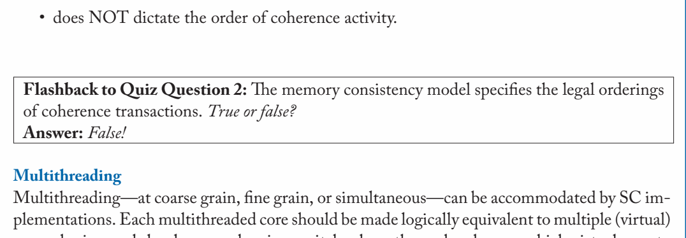
ENGLISH• does NOT dictate the order of coherence activity.
中文• 不规定缓存一致性活动的顺序。
ENGLISHFlashback to Quiz Question 2: The memory consistency model specifies the legal orderings of coherence transactions. True or false? Answer: False!
中文回顾测验问题2：内存一致性模型规定缓存一致性事务的合法顺序。对还是错？答案：错！
ENGLISHMultithreading Multithreading—at coarse grain, fine grain, or simultaneous—can be accommodated by SC implementations. Each multithreaded core should be made logically equivalent to multiple (virtual) cores sharing each level-one cache via a switch where the cache chooses which virtual core to service next. Moreover, each cache can actually serve multiple non-conflicting requests concurrently because it can pretend that they were serviced in some order. One challenge is ensuring that a thread T1 cannot read a value written by another thread T2 on the same core before the store has been made “visible” to threads on other cores. Thus, while thread T1 may read the
中文多线程
SC实现可以支持粗粒度、细粒度或同时多线程。每个多线程核在逻辑上应等价于多个虚拟核，通过一个交换开关共享L1缓存，由缓存选择下一个服务的虚拟核。此外，缓存实际可以同时服务多个互不冲突的请求，因为它可以将这些请求解释为按某种顺序完成。一个挑战是确保同一核上的线程T1，不能在T2的 store 对其他核上的线程“可见”之前，读到T2写入的值。因此，T2一旦将 store 插入内存顺序，例如写入M状态的缓存块，T1就可以读取该
SC实现可以支持粗粒度、细粒度或同时多线程。每个多线程核在逻辑上应等价于多个虚拟核，通过一个交换开关共享L1缓存，由缓存选择下一个服务的虚拟核。此外，缓存实际可以同时服务多个互不冲突的请求，因为它可以将这些请求解释为按某种顺序完成。一个挑战是确保同一核上的线程T1，不能在T2的 store 对其他核上的线程“可见”之前，读到T2写入的值。因此，T2一旦将 store 插入内存顺序，例如写入M状态的缓存块，T1就可以读取该
ENGLISH2Roth [17] demonstrated a scheme for avoiding many load replays by determining when they are not necessary.
中文² Roth[17]展示了一种通过判断何时无需重放，来避免大量 load 重放的方法。
查看 原书第 31 页 的完整原版面（PDF 53）
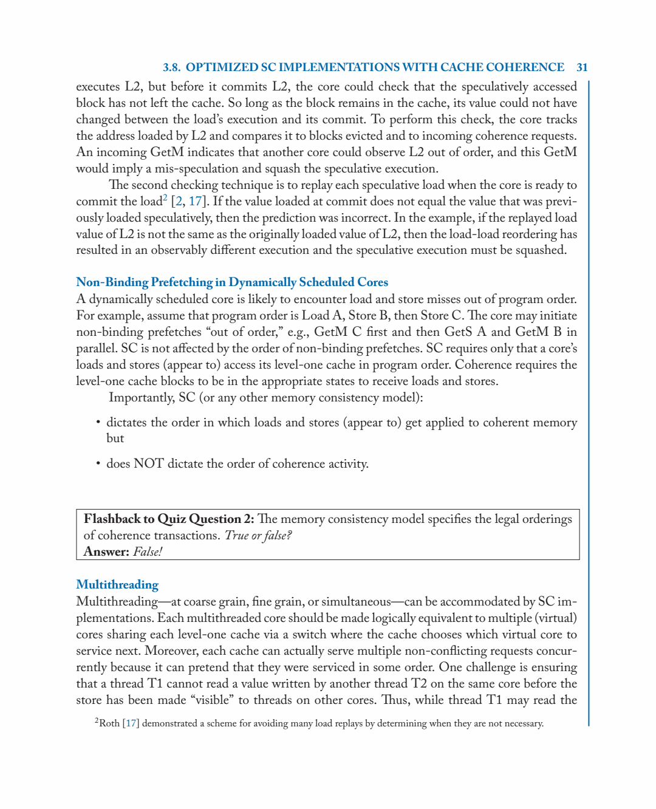
原书第 32 页PDF 54
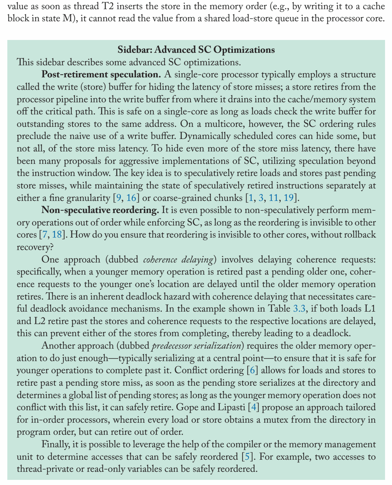
ENGLISHvalue as soon as thread T2 inserts the store in the memory order (e.g., by writing it to a cache block in state M), it cannot read the value from a shared load-store queue in the processor core.
中文值，但不能提前从处理器核内部共享的 load—store 队列中读取该值。
ENGLISHSidebar: Advanced SC Optimizations This sidebar describes some advanced SC optimizations.
中文旁注：SC的高级优化
本旁注介绍若干高级SC优化。
本旁注介绍若干高级SC优化。
ENGLISHPost-retirement speculation. A single-core processor typically employs a structure called the write (store) buffer for hiding the latency of store misses; a store retires from the processor pipeline into the write buffer from where it drains into the cache/memory system off the critical path. This is safe on a single-core as long as loads check the write buffer for outstanding stores to the same address. On a multicore, however, the SC ordering rules preclude the naive use of a write buffer. Dynamically scheduled cores can hide some, but not all, of the store miss latency. To hide even more of the store miss latency, there have been many proposals for aggressive implementations of SC, utilizing speculation beyond the instruction window. The key idea is to speculatively retire loads and stores past pending store misses, while maintaining the state of speculatively retired instructions separately at either a fine granularity [9, 16] or coarse-grained chunks [1, 3, 11, 19].
中文退休后推测。单核处理器通常采用写（store）缓冲区隐藏 store 缺失延迟：store 从处理器流水线退休后进入写缓冲区，再从缓冲区排入缓存／内存系统，从而移出关键路径。在单核中，只要 load 检查写缓冲区内是否存在针对相同地址的未完成 store，这种方式就是安全的。但在多核中，SC的顺序规则不允许直接采用这种朴素写缓冲区。动态调度核能够隐藏部分 store 缺失延迟，却无法隐藏全部。为进一步隐藏该延迟，已有许多激进的SC实现方案，采用超出指令窗口范围的推测。核心思想是，让后续 load 和 store 越过尚未完成的 store 缺失，推测性地退休，同时以细粒度方式[9, 16]或粗粒度指令块方式[1, 3, 11, 19]，单独维护这些推测退休指令的状态。
ENGLISHNon-speculative reordering. It is even possible to non-speculatively perform memory operations out of order while enforcing SC, as long as the reordering is invisible to other cores [7, 18]. How do you ensure that reordering is invisible to other cores, without rollback recovery?
中文非推测重排。只要重排对其他核不可见，甚至可以在保证SC的同时，以非推测方式乱序执行内存操作[7, 18]。那么，如何在不依赖回滚恢复的情况下，确保其他核看不到重排？
ENGLISHOne approach (dubbed coherence delaying) involves delaying coherence requests: specifically, when a younger memory operation is retired past a pending older one, coherence requests to the younger one’s location are delayed until the older memory operation retires. There is an inherent deadlock hazard with coherence delaying that necessitates careful deadlock avoidance mechanisms. In the example shown in Table 3.3, if both loads L1 and L2 retire past the stores and coherence requests to the respective locations are delayed, this can prevent either of the stores from completing, thereby leading to a deadlock.
中文一种方法称为缓存一致性延迟，涉及推迟缓存一致性请求。具体而言，当较年轻的内存操作越过尚未完成的较老操作退休时，推迟针对较年轻操作所访问位置的缓存一致性请求，直到较老操作退休。缓存一致性延迟具有内在的死锁风险，因此必须精心设计死锁避免机制。在表3.3中，如果L1和L2都越过各自的 store 退休，且针对相应位置的缓存一致性请求被延迟，就可能使两个 store 都无法完成，最终导致死锁。
ENGLISHAnother approach (dubbed predecessor serialization) requires the older memory operation to do just enough—typically serializing at a central point—to ensure that it is safe for younger operations to complete past it. Conflict ordering [6] allows for loads and stores to retire past a pending store miss, as soon as the pending store serializes at the directory and determines a global list of pending stores; as long as the younger memory operation does not conflict with this list, it can safely retire. Gope and Lipasti [4] propose an approach tailored for in-order processors, wherein every load or store obtains a mutex from the directory in program order, but can retire out of order.
中文另一种方法称为前驱串行化，要求较老的内存操作先完成足够的工作，通常是在某个中心点完成串行化，以确保较年轻操作能够安全地越过它完成。冲突排序[6]允许 load 和 store 越过未完成的 store 缺失退休，前提是该 store 已在目录处串行化，并确定了全局未完成 store 列表；只要较年轻的操作与列表不冲突，就可以安全退休。Gope与Lipasti[4]提出面向顺序处理器的方法：每次 load 或 store 按程序顺序从目录取得互斥权限，但可以乱序退休。
ENGLISHFinally, it is possible to leverage the help of the compiler or the memory management unit to determine accesses that can be safely reordered [5]. For example, two accesses to thread-private or read-only variables can be safely reordered.
中文最后，也可以借助编译器或内存管理单元，识别能够安全重排的访问[5]。例如，对线程私有变量或只读变量的两次访问，就可以安全重排。
查看 原书第 32 页 的完整原版面（PDF 54）
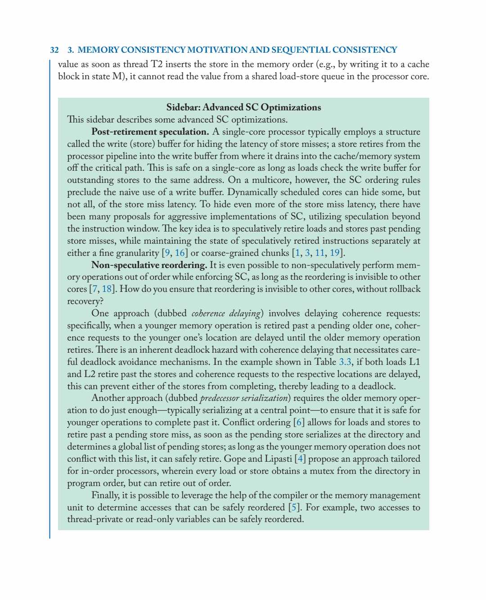
原书第 33 页PDF 55
ENGLISH3.9 ATOMIC OPERATIONS WITH SC
中文3.9 SC下的原子操作
ENGLISHTo write multithreaded code, a programmer needs to be able to synchronize the threads, and such synchronization often involves atomically performing pairs of operations. This functionality is provided by instructions that atomically perform a “read-modify-write” (RMW ), such as the well-known “test-and-set,” “fetch-and-increment,” and “compare-and-swap.” These atomic instructions are critical for proper synchronization and are used to implement spin-locks and other synchronization primitives. For a spin-lock, a programmer might use an RMW to atomically read whether the lock’s value is unlocked (e.g., equal to 0) and write the locked value (e.g., equal to 1). For the RMW to be atomic, the read (load) and write (store) operations of the RMW must appear consecutively in the total order of operations required by SC.
中文编写多线程代码时，程序员必须能够同步线程，而同步往往涉及原子地完成一对操作。这一功能由原子读—改—写（RMW）指令提供，例如常见的test-and-set（测试并置位）、fetch-and-increment（取值并递增）和compare-and-swap（比较并交换）。这些指令对正确同步至关重要，通常用于实现自旋锁等同步原语。对于自旋锁，程序员可以使用RMW，原子地读取锁是否处于未锁定状态，例如值为0，并写入锁定值，例如1。要使RMW具有原子性，其中的读（load）与写（store）必须在SC要求的操作全序中连续出现。
ENGLISHImplementing atomic instructions in the microarchitecture is conceptually straightforward, but naive designs can lead to poor performance for atomic instructions. A correct but simplistic approach to implementing atomic instructions would be for the core to effectively lock the memory system (i.e., prevent other cores from issuing memory accesses) and perform its read, modify, and write operations to memory. This implementation, although correct and intuitive, sacrifices performance.
中文在微体系结构中实现原子指令，概念上很直接，但朴素设计可能使原子指令性能较差。一种正确而简单的方法是让核实际上锁住整个内存系统，即阻止其他核发起内存访问，然后完成对内存的读取、修改与写回。这种实现虽然正确直观，却牺牲了性能。
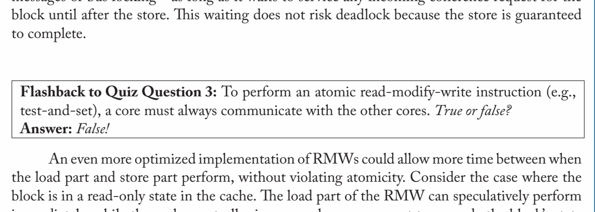
ENGLISHMore aggressive implementations of RMWs leverage the insight that SC requires only the appearance of a total order of all requests. Thus, an atomic RMW can be implemented by first having a core obtain the block in state M in its cache, if the block is not already there in that state. The core then needs to only load and store the block in its cache—without any coherence messages or bus locking—as long as it waits to service any incoming coherence request for the block until after the store. This waiting does not risk deadlock because the store is guaranteed to complete.
中文更激进的RMW实现利用了这样一个事实：SC只要求所有请求表现为存在全序。因此，可以先让核将目标块以M状态取入缓存，如果该块尚未处于此状态。随后，核只需在自己的缓存中 load 并 store 该块，无须缓存一致性消息，也无须锁总线，只要对该块到达的缓存一致性请求等到 store 完成后再处理即可。这种等待没有死锁风险，因为 store 保证能够完成。
ENGLISHFlashback to Quiz Question 3: To perform an atomic read-modify-write instruction (e.g., test-and-set), a core must always communicate with the other cores. True or false? Answer: False!
中文回顾测验问题3：执行原子读—改—写指令，例如test-and-set时，核始终必须与其他核通信。对还是错？答案：错！
ENGLISHAn even more optimized implementation of RMWs could allow more time between when the load part and store part perform, without violating atomicity. Consider the case where the block is in a read-only state in the cache. The load part of the RMW can speculatively perform immediately, while the cache controller issues a coherence request to upgrade the block’s state to read-write. When the block is then obtained in read-write state, the write part of the RMW performs. As long as the core can maintain the illusion of atomicity, this implementation is correct. To check whether the illusion of atomicity is maintained, the core must check whether the loaded block is evicted from the cache between the load part and the store part; this speculation support is the same as that needed for detecting mis-speculation in SC (Section 3.8).
中文进一步优化的RMW实现，可以在不破坏原子性的情况下，允许 load 部分与 store 部分之间间隔更长时间。假设目标块在缓存中处于只读状态，RMW的 load 部分可立即推测执行，同时缓存控制器发出一致性请求，将该块升级为读写状态。取得读写状态后，再执行RMW的写入部分。只要处理器核能够维持原子性表现，这种实现就是正确的。为检查原子性是否得以维持，核必须检查目标块是否在 load 与 store 之间被逐出缓存；这与SC中检测错误推测所需的支持相同，参见3.8节。
查看 原书第 33 页 的完整原版面（PDF 55）
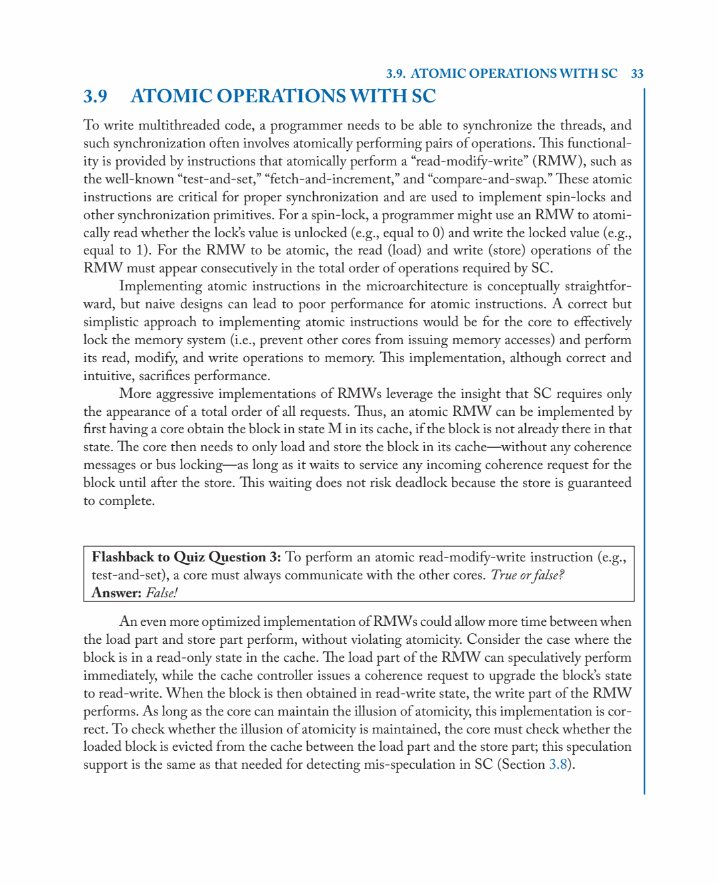
原书第 34 页PDF 56
ENGLISH3.10 PUTTING IT ALL TOGETHER: MIPS R10000
中文3.10 综合案例：MIPS R10000
ENGLISHThe MIPS R10000 [21] provides a venerable, but clean, commercial example for a speculative microprocessor that implements SC in cooperation with a cache-coherent memory hierarchy. Herein, we concentrate on aspects of the R10000 that pertain to implementing memory consistency.
中文MIPS R10000[21]是一个年代较早但结构清晰的商业案例，展示推测执行微处理器如何与支持缓存一致性的内存层次结构协作，实现SC。这里重点关注R10000中与实现内存一致性相关的部分。
ENGLISHThe R10000 is a four-way superscalar RISC processor core with branch prediction and out-of-order execution. The chip supports writeback caches for L1 instructions and L1 data, as well as a private interface to an (off-chip) unified L2 cache.
中文R10000是一个四发射超标量RISC处理器核，支持分支预测与乱序执行。芯片具有采用写回策略的L1指令缓存和L1数据缓存，并通过私有接口连接片外统一L2缓存。
ENGLISHThe chip’s main system interface bus supports cache coherence for up to four processors, as depicted in Figure 3.7 (adapted from Figure 1 in Yeager [21]). To construct an R10000-based system with more processors, such as the SGI Origin 2000 (discussed at length in Section 8.8.1), architects implemented a directory coherence protocol that connects R10000 processors via the system interface bus and a specialized Hub chip. In both cases, the R10000 processor core sees a coherent memory system that happens to be partially on-chip and partially off-chip.
中文芯片的主系统接口总线支持最多四个处理器之间的缓存一致性，如图3.7所示，该图改编自Yeager[21]的图1。为构建包含更多R10000处理器的系统，例如8.8.1节详述的SGI Origin 2000，设计者实现了目录式缓存一致性协议，经由系统接口总线和专用Hub芯片连接各R10000。两种情况下，R10000处理器核看到的都是一个支持缓存一致性的内存系统，只是其中一部分位于片上、一部分位于片外。
ENGLISHDuring execution, an R10000 core issues (speculative) loads and stores in program order into an address queue. A load obtains a (speculative) value from the last store before it to the same address or, if none, the data cache. Loads and stores commit in program order and then remove their address queue entries. To commit a store, the L1 cache must hold the block in state M and the store’s value must be written atomically with the commit.
中文执行期间，R10000核按程序顺序将推测 load 和 store 发射至地址队列。load 从此前针对同一地址的最后一次 store 取得推测值；若没有这样的 store，则从数据缓存取值。load 和 store 按程序顺序提交，随后移除对应的地址队列项。store 提交时，L1缓存必须以M状态持有目标块，且 store 值的写入必须与提交原子地完成。
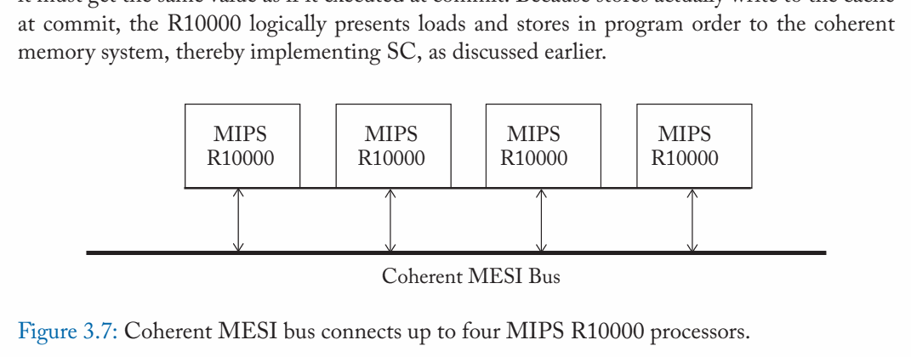
ENGLISHImportantly, the eviction of a cache block—due to a coherence invalidation or to make room for another block—that contains a load’s address in the address queue squashes the load and all subsequent instructions, which then re-execute. Thus, when a load finally commits, the loaded block was continuously in the cache between when it executed and when it commits, so it must get the same value as if it executed at commit. Because stores actually write to the cache at commit, the R10000 logically presents loads and stores in program order to the coherent memory system, thereby implementing SC, as discussed earlier.
中文关键在于，如果某个被逐出的缓存块包含地址队列中某个 load 所访问的地址，无论逐出是由缓存一致性无效化引起，还是为了给其他块腾出空间，该 load 及其后的全部指令都会被撤销并重新执行。因此，当 load 最终提交时，目标块从 load 执行到提交始终保留在缓存中，其值必然与 load 在提交时执行所得到的值相同。由于 store 在提交时才真正写入缓存，R10000在逻辑上按程序顺序将 load 和 store 提交给支持缓存一致性的内存系统，从而按前述方法实现SC。
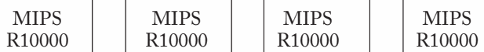
展开可搜索的英文文字
MIPS MIPS MIPS MIPS R10000 R10000 R10000 R10000查看 原书第 34 页 的完整原版面（PDF 56）
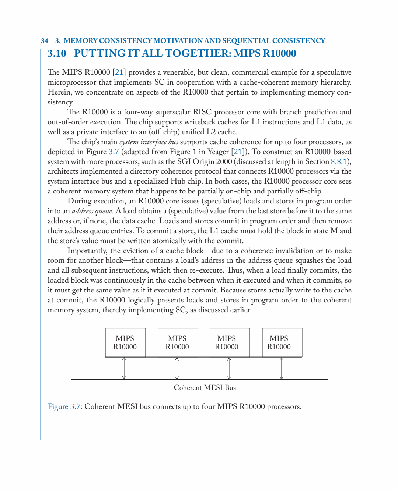
原书第 35 页PDF 57
ENGLISH3.11 FURTHER READING REGARDING SC
中文3.11 关于SC的延伸阅读
ENGLISHBelow we highlight a few of the papers from the vast literature surrounding SC.
中文下面从大量SC文献中选出若干篇进行介绍。
ENGLISHLamport [12] defined SC. As far as we know, Meixner and Sorin [15] were the first to prove that a system in which cores present loads and stores in program order to a cache coherent memory system was sufficient to implement SC, even as this result was intuitively believed for some time.
中文Lamport[12]定义了SC。据我们所知，Meixner与Sorin[15]首次证明：只要各核按程序顺序向支持缓存一致性的内存系统提交 load 和 store，就足以实现SC；尽管在此之前，人们凭直觉已长期相信这一结论。
ENGLISHSC can be compared with database serializability [10]. The two concepts are similar in that they both insist that the operations from all entities appear to affect shared state in a serial order. The concepts differ due to the nature of and expectation for operations and shared state. With SC, each operation is a single memory access to volatile state (memory) that is assumed not to fail. With serializability, each operation is a transaction on a database that can read and write multiple database entities and is expected to obey ACID properties: Atomic—all or nothing even with failures; Consistent—leave the database consistent; Isolated—no effect from concurrent transactions; and Durable—effects survive crashes and power loss.
中文SC可以与数据库的可串行化性[10]比较。二者都要求，各实体的操作表现为按串行顺序影响共享状态。区别在于操作与共享状态的性质及预期。在SC中，每个操作是对易失状态（内存）的一次访问，并假定不会失败。在可串行化性中，每个操作是数据库事务，可以读写多个数据库实体，并且预期遵循ACID性质：原子性（Atomic），即便发生故障也要么全部完成、要么全部不发生；一致性（Consistent），使数据库保持一致；隔离性（Isolated），不受并发事务影响；持久性（Durable），其效果在崩溃和断电后仍保留。
ENGLISHWe followed Lamport and SPARC to define a total order of all memory accesses. While this can ease intuition for some, it is not necessary. Recall that two accesses conflict if they are from different threads, access the same location, and at least one is a store (or RMW ). Instead of a total order, one can just define the constraints on conflicting accesses and leave non-conflicting accesses unordered, as pioneered by Shasha and Snir [18]. This view can be especially valuable for the relaxed models of Chapter 5.
中文我们沿用Lamport和SPARC的方式，为全部内存访问定义全序。这对部分读者的直观理解有帮助，但并非必需。回顾冲突的定义：两个来自不同线程的访问针对同一位置，且至少一个是 store 或RMW。也可以不定义全序，只规定冲突访问之间的约束，而不为互不冲突的访问排序；Shasha与Snir[18]率先采用了这一方法。该视角对第5章的宽松模型尤其有用。
ENGLISHFinally, a cautionary tale. We stated earlier (Section 3.7) that one way to check whether a speculatively executed load could have been observed out of order is to remember the value A that is speculatively read by a load and to commit the load if, at commit, the memory location has the same value A. Martin et al. [14] show that this is not the case for cores that perform value prediction [13]. With value prediction, when a load executes, the core can speculate on its value. Consider a core that speculates that a load of block X will produce the value A, although the value is actually B. Between when the core speculates on the load of X and when it replays the load at commit, another core changes block X’s value to A. The core then replays the load at commit, compares the two values, which are equal, and mistakenly determines that the speculation was correct. The system can violate SC if it speculates in this way. This situation is analogous to the so-called ABA problem (http://en.wikipedia.org/wiki/ABA_problem), and Martin et al. showed that there are ways of checking speculation in the presence of value prediction that avoid the possibility of consistency violations (e.g., by also replaying all loads dependent on the initially speculated load). The point of this discussion is not to delve into the details of this particular corner case or its solutions, but rather to convince you to prove that your implementation is correct rather than rely on intuition.
中文最后，给出一个需要警惕的例子。前文（原文指向3.7节）提到，一种检查推测 load 是否可能被观察为乱序的方法是：记录 load 推测读到的值A，如果提交时该内存位置仍为A，就允许提交。Martin等人[14]指出，对于采用值预测[13]的处理器核，这种方法并不成立。采用值预测时，load 执行可推测其结果。假设核预测对块X的 load 将产生A，但实际值为B。在推测 load X与提交时重放 load 之间，另一个核把X改为A。于是，核在提交时重放 load，比较两个相等的值，并错误地认为推测正确。采用这种推测方式可能违反SC。这类似于所谓ABA问题（http://en.wikipedia.org/wiki/ABA_problem）。Martin等人给出了在存在值预测时仍能避免一致性违规的检查方法，例如同时重放所有依赖最初推测 load 的后续 load。本段并非要深入讨论这一边界情况或解决方法，而是希望说明：应证明实现正确，而不能仅凭直觉。
查看 原书第 35 页 的完整原版面（PDF 57）
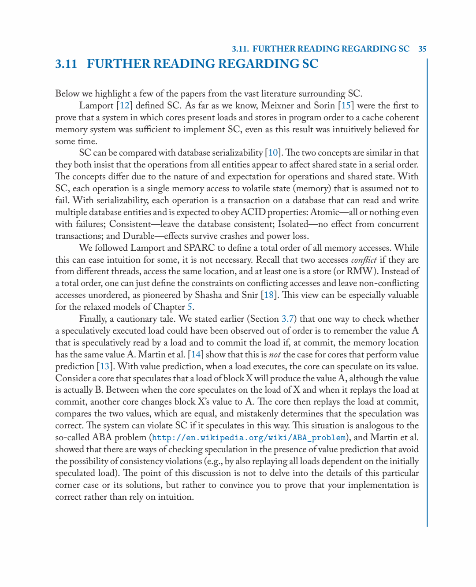
原书第 36 页PDF 58
ENGLISH3.12 REFERENCES
中文3.12 参考文献
ENGLISH[1] C. Blundell, M. M. K. Martin, and T. F. Wenisch. InvisiFence: Performance-transparent memory ordering in conventional multiprocessors. In Proc. of the 36th Annual International Symposium on Computer Architecture, June 2009. DOI: 10.1145/1555754.1555785. 32
中文[1] C. Blundell、M. M. K. Martin、T. F. Wenisch.《InvisiFence：传统多处理器中对性能透明的内存排序》。Proc. of the 36th Annual International Symposium on Computer Architecture，2009年6月。DOI: 10.1145/1555754.1555785。引用页：32。
ENGLISH[2] H. W. Cain and M. H. Lipasti. Memory ordering: A value-based approach. In Proc. of the 31st Annual International Symposium on Computer Architecture, June 2004. DOI: 10.1109/isca.2004.1310766. 31
中文[2] H. W. Cain、M. H. Lipasti.《内存排序：一种基于值的方法》。Proc. of the 31st Annual International Symposium on Computer Architecture，2004年6月。DOI: 10.1109/isca.2004.1310766。引用页：31。
ENGLISH[3] L. Ceze, J. Tuck, P. Montesinos, and J. Torrellas. BulkSC: Bulk enforcement of sequential consistency. In Proc. of the 34th Annual International Symposium on Computer Architecture, June 2007. DOI: 10.1145/1250662.1250697. 32
中文[3] L. Ceze、J. Tuck、P. Montesinos、J. Torrellas.《BulkSC：批量保证顺序一致性》。Proc. of the 34th Annual International Symposium on Computer Architecture，2007年6月。DOI: 10.1145/1250662.1250697。引用页：32。
ENGLISH[4] D. Gope and M. H. Lipasti. Atomic SC for simple in-order processors. In 20th IEEE International Symposium on High Performance Computer Architecture, 2014. DOI: 10.1109/hpca.2014.6835950. 32
中文[4] D. Gope、M. H. Lipasti.《面向简单顺序处理器的原子SC》。20th IEEE International Symposium on High Performance Computer Architecture，2014。DOI: 10.1109/hpca.2014.6835950。引用页：32。
ENGLISH[5] A. Singh, S. Narayanasamy, D. Marino, T.D Millstein, and M. Musuvathi. End-to-end sequential consistency. In 39th International Symposium on Computer Architecture, 2012. DOI: 10.1109/isca.2012.6237045. 32
中文[5] A. Singh、S. Narayanasamy、D. Marino、T. D. Millstein、M. Musuvathi.《端到端顺序一致性》。39th International Symposium on Computer Architecture，2012。DOI: 10.1109/isca.2012.6237045。引用页：32。
ENGLISH[6] C. Lin, V. Nagarajan, R. Gupta, and B. Rajaram. Efficient sequential consistency via conflict ordering. In Proc. of the 17th International Conference on Architectural Support for Programming Languages and Operating Systems ASPLOS, 2012. DOI: 10.1145/2150976.2151006. 32
中文[6] C. Lin、V. Nagarajan、R. Gupta、B. Rajaram.《通过冲突排序高效实现顺序一致性》。Proc. of the 17th International Conference on Architectural Support for Programming Languages and Operating Systems（ASPLOS），2012。DOI: 10.1145/2150976.2151006。引用页：32。
ENGLISH[7] K. Gharachorloo, S. V. Adve, A. Gupta, J. Hennessy, and M. D. Hill. Specifying system requirements for memory consistency models. Technical Report CSL-TR93-594, Stanford University, December 1993. 32
中文[7] K. Gharachorloo、S. V. Adve、A. Gupta、J. Hennessy、M. D. Hill.《规定内存一致性模型的系统要求》。技术报告CSL-TR93-594，Stanford University，1993年12月。引用页：32。
ENGLISH[8] K. Gharachorloo, A. Gupta, and J. Hennessy. Two techniques to enhance the performance of memory consistency models. In Proc. of the International Conference on Parallel Processing, vol. I, pp. 355–64, August 1991. 30
中文[8] K. Gharachorloo、A. Gupta、J. Hennessy.《提升内存一致性模型性能的两种技术》。Proc. of the International Conference on Parallel Processing，第I卷，355—364页，1991年8月。引用页：30。
ENGLISH[9] C. Guiady, B. Falsafi, and T. Vijaykumar. Is SC ILP RC? In Proc. of the 26th C D Annual International Symposium on Computer Architecture, pp. 162–71, May 1999. DOI: 10.1109/isca.1999.765948. 32

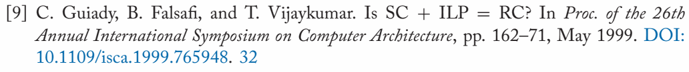
数学符号与上下标以此原版面为准中文[9] C. Guiady、B. Falsafi、T. Vijaykumar.《SC + ILP = RC吗？》。Proc. of the 26th Annual International Symposium on Computer Architecture，162—171页，1999年5月。DOI: 10.1109/isca.1999.765948。引用页：32。
ENGLISH[10] J. Gray and A. Reuter. Transaction Processing: Concepts and Techniques. Morgan Kaufmann Publishers, 1993. 35
中文[10] J. Gray、A. Reuter.《事务处理：概念与技术》。Morgan Kaufmann Publishers，1993。引用页：35。
ENGLISH[11] L. Hammond et al. Transactional memory coherence and consistency. In Proc. of the 31st Annual International Symposium on Computer Architecture, June 2004. DOI: 10.1109/isca.2004.1310767. 32
中文[11] L. Hammond等.《事务内存的缓存一致性与内存一致性》。Proc. of the 31st Annual International Symposium on Computer Architecture，2004年6月。DOI: 10.1109/isca.2004.1310767。引用页：32。
查看 原书第 36 页 的完整原版面（PDF 58）
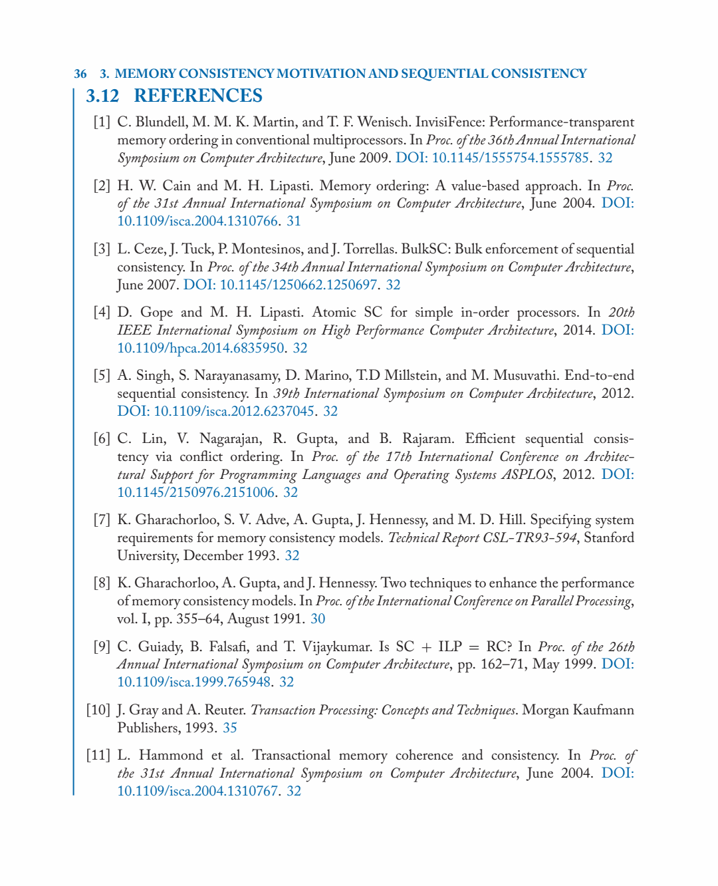
原书第 37 页PDF 59
ENGLISH[12] L. Lamport. How to make a multiprocessor computer that correctly executes multiprocess programs. IEEE Transactions on Computers, C-28(9):690–91, September 1979. DOI: 10.1109/tc.1979.1675439. 22, 35
中文[12] L. Lamport.《如何构建能正确执行多进程程序的多处理器计算机》。IEEE Transactions on Computers，C-28(9):690—691，1979年9月。DOI: 10.1109/tc.1979.1675439。引用页：22、35。
ENGLISH[13] M. H. Lipasti and J. P. Shen. Exceeding the dataflow limit via value prediction. In Proc. of the 29th Annual IEEE/ACM International Symposium on Microarchitecture, pp. 226–37, December 1996. DOI: 10.1109/micro.1996.566464. 35
中文[13] M. H. Lipasti、J. P. Shen.《通过值预测突破数据流限制》。Proc. of the 29th Annual IEEE/ACM International Symposium on Microarchitecture，226—237页，1996年12月。DOI: 10.1109/micro.1996.566464。引用页：35。
ENGLISH[14] M. M. K. Martin, D. J. Sorin, H. W. Cain, M. D. Hill, and M. H. Lipasti. Correctly implementing value prediction in microprocessors that support multithreading or multiprocessing. In Proc. of the 34th Annual IEEE/ACM International Symposium on Microarchitecture, pp. 328–37, December 2001. DOI: 10.1109/micro.2001.991130. 35
中文[14] M. M. K. Martin、D. J. Sorin、H. W. Cain、M. D. Hill、M. H. Lipasti.《在支持多线程或多处理的微处理器中正确实现值预测》。Proc. of the 34th Annual IEEE/ACM International Symposium on Microarchitecture，328—337页，2001年12月。DOI: 10.1109/micro.2001.991130。引用页：35。
ENGLISH[15] A. Meixner and D. J. Sorin. Dynamic verification of memory consistency in cachecoherent multithreaded computer architectures. In Proc. of the International Conference on Dependable Systems and Networks, pp. 73–82, June 2006. DOI: 10.1109/dsn.2006.29. 35
中文[15] A. Meixner、D. J. Sorin.《在支持缓存一致性的多线程计算机体系结构中动态验证内存一致性》。Proc. of the International Conference on Dependable Systems and Networks，73—82页，2006年6月。DOI: 10.1109/dsn.2006.29。引用页：35。
ENGLISH[16] P. Ranganathan, V. S. Pai, and S. V. Adve. Using speculative retirement and larger instruction windows to narrow the performance gap between memory consistency models. In Proc. of the 9th ACM Symposium on Parallel Algorithms and Architectures, pp. 199–210, June 1997. DOI: 10.1145/258492.258512. 32
中文[16] P. Ranganathan、V. S. Pai、S. V. Adve.《利用推测退休与更大的指令窗口缩小内存一致性模型间的性能差距》。Proc. of the 9th ACM Symposium on Parallel Algorithms and Architectures，199—210页，1997年6月。DOI: 10.1145/258492.258512。引用页：32。
ENGLISH[17] A. Roth. Store vulnerability window (SVW ): Re-execution filtering for enhanced load optimization. In Proc. of the 32nd Annual International Symposium on Computer Architecture, June 2005. DOI: 10.1109/isca.2005.48. 31
中文[17] A. Roth.《store 脆弱窗口（SVW）：通过重执行过滤增强 load 优化》。Proc. of the 32nd Annual International Symposium on Computer Architecture，2005年6月。DOI: 10.1109/isca.2005.48。引用页：31。
ENGLISH[18] D. Shasha and M. Snir. Efficient and correct execution of parallel programs that share memory. ACM Transactions on Programming Languages and Systems, 10(2):282–312, April
中文[18] D. Shasha、M. Snir.《高效且正确地执行共享内存并行程序》。ACM Transactions on Programming Languages and Systems，10(2):282—312，
ENGLISH1988. DOI: 10.1145/42190.42277. 32, 35
中文1988年4月。DOI: 10.1145/42190.42277。引用页：32、35。
ENGLISH[19] T. F. Wenisch, A. Ailamaki, A. Moshovos, and B. Falsafi. Mechanisms for store-wait-free multiprocessors. In Proc. of the 34th Annual International Symposium on Computer Architecture, June 2007. DOI: 10.1145/1250662.1250696. 32
中文[19] T. F. Wenisch、A. Ailamaki、A. Moshovos、B. Falsafi.《无需等待 store 的多处理器机制》。Proc. of the 34th Annual International Symposium on Computer Architecture，2007年6月。DOI: 10.1145/1250662.1250696。引用页：32。
ENGLISH[20] D. L. Weaver and T. Germond, Eds. SPARC Architecture Manual (Version 9). PTR Prentice Hall, 1994. 23
中文[20] D. L. Weaver、T. Germond，编.《SPARC体系结构手册（第9版）》。PTR Prentice Hall，1994。引用页：23。
ENGLISH[21] K. C. Yeager. The MIPS R10000 superscalar microprocessor. IEEE Micro, 16(2):28–40, April 1996. DOI: 10.1109/40.491460. 34
中文[21] K. C. Yeager.《MIPS R10000超标量微处理器》。IEEE Micro，16(2):28—40，1996年4月。DOI: 10.1109/40.491460。引用页：34。
查看 原书第 37 页 的完整原版面（PDF 59）
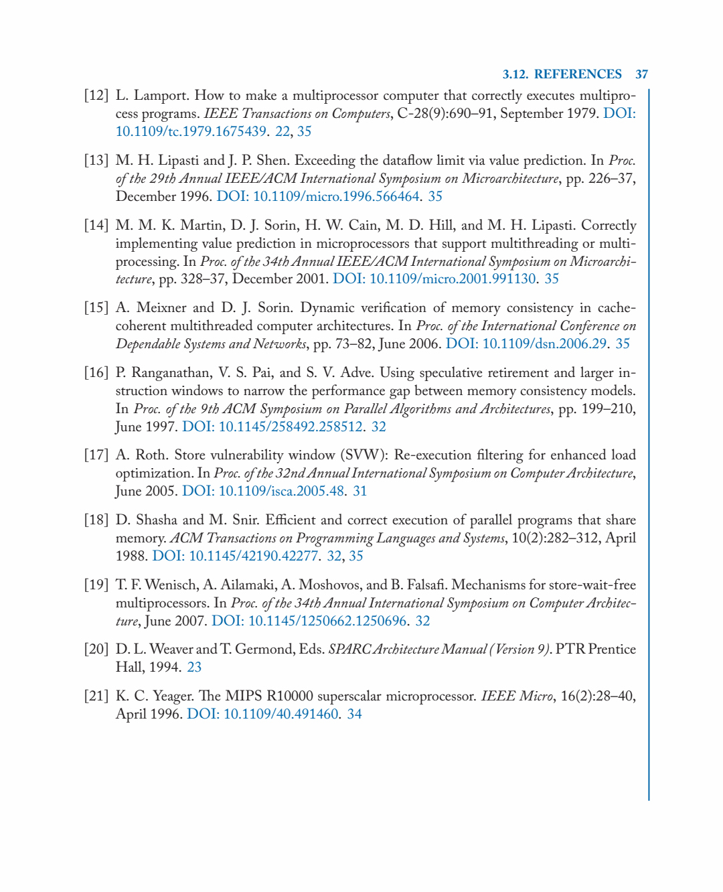